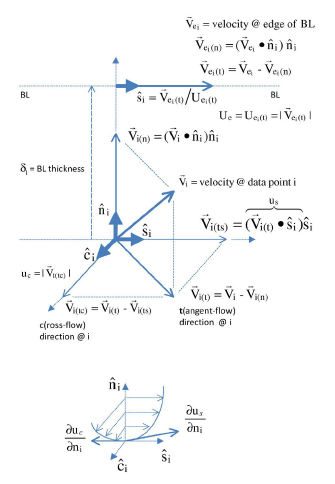

Calculator functions#
EnSight supports a large number of calculator functions.
An ENS_VAR object can represent
either fields read from disk or the use of a calculator function
to compute a new variable from an input collection of parts, variables, and
user-specified parameters.
You can use the native API function pyensight.ensight_api.variables.evaluate()
and the object API function pyensight.ens_globals.ENS_GLOBALS.create_variable()
to create new EnSight variables that leverage these calculator functions.
These function use a string representation of the function to create the
new variable. Most calculator functions take a partlist (plist) as
a parameter. In the native API, you use the plist string to refer to the currently
selected parts. In the object API, you use the same plist text string, but you
can specify the selection of parts to be used directly via the source keyword.
This code provides some examples:
# Create a variable named 'newvar1' using the :ref:`CmplxTransResp <CmplxTransResp>`
# calculator function and the input variable 'c_scalar'. The variable is to be defined on
# all of the current parts.
session.ensight.part.select_all()
session.ensight.variables.evaluate("newvar1 = CmplxTransResp(plist,c_scalar,90.0)")
# Create a variable named 'newvar2' using the :ref:`EleSize <EleSize>`
# calculator function. The variable is to be defined on all of the current parts.
varobj = session.ensight.objs.core.create_variable("newvar2", "EleSize(plist)",
sources=session.ensight.objs.core.PARTS)
Per-part constants
Some calculator functions (such as Area()) return constant values. EnSight supports constant values that are per-case and per-part. For example, if the Area() function is computed as a per-case constant, the value is the sum of the area values computed part by part. If the Area() function is computed as a per-part constant, the individual values for each part are stored on each part.
All constant values are computed as per-case by default. For per-part computation, you
must add an optional additional argument to the function. For example, Area(plist)
results in a per-case constant by default. Area(plist,Compute_Per_case) is also computed
as per-case explicitly. Area(plist,Compute_Per_part) results in the variable being
computed as per-part.
Not all calculator functions support this. For those that do, the notion [,Compute_Per_part]
appears in the documentation. For an example, see: Area().
Area()#
Area
Area(any part or parts [, Compute_Per_part])
Computes a constant or constant per part variable whose value is the area of the selected parts. If a part is composed of 3D elements, the area is of the border representation of the part. The area of 1D elements is zero.
BL_aGradOfVelMag()#
Boundary Layer: A Gradient of Velocity Magnitude
BL_aGradOfVelMag(boundary part or parts, velocity)
Computes a vector variable that is the gradient of the magnitude of the specified velocity variable on the selected boundary part or parts. The vector variable is defined as:
\(GRA{D}_{BP}\left|V\right|={\nabla }_{BP}\left|V\right|=\frac{\partial V}{\partial x}\widehat{i}+\frac{\partial V}{\partial y}\widehat{j}+\frac{\partial V}{\partial z}\widehat{k}\)
where:
\(BP\) |
on boundary part |
\(V=V\left(x,y,z\right)\) |
velocity vector |
\(\left|V\right|\) |
magnitude of velocity vector = \(\sqrt{V·V}\) |
x, y, z |
coordinate directions |
i, j, k |
unit vectors in coordinate directions |
Note
For each boundary part, this function finds its corresponding field part
(pfield), computes the gradient of the velocity
magnitude on the field part (Grad(pfield,velocity), and
then maps these computed values onto the boundary part.
Node or element IDs are used if they exist. Otherwise, the coordinate values between the field part and boundary part are mapped and resolved via a floating-point hashing scheme.
This velocity-magnitude gradient variable can be used as an argument for the following boundary-layer functions that require this variable.
Boundary layer (BL_*) functions are not supported for
Server of Server (SoS) decomposition.
Boundary part |
2D part |
Velocity |
vector variable |
BL_CfEdge()#
Boundary Layer: Edge Skin-Friction Coefficient
BL_CfEdge(boundary part or parts, velocity, density, viscosity, ymax, flow comp(0,1,or2), grad)
Computes a scalar variable that is the edge skin-friction coefficient \({C}_{f\left(e\right)}\) (that is, using the density \({\rho }_{e}\) and velocity \({U}_{e}\) values at the edge of the boundary layer, not the free-stream density \({\rho }_{\infty }\) and velocity \({U}_{\infty }\) values). This scalar variable is defined as:
Component: 0 = Total tangential-flow (parallel) to wall:
\({C}_{f\left(e\right)}=2{\tau }_{w}/\left({\rho }_{e}{U}_{e}^{2}\right)\)
Component: 1 = Stream-wise (flow) component tangent (parallel) to wall:
\({C}_{fs\left(e\right)}=2{\tau }_{ws}/\left({\rho }_{e}{U}_{e}^{2}\right)\)
Component: 2 = Cross-flow component tangent (parallel) to wall:
\({C}_{fc\left(e\right)}=2{\tau }_{wc}/\left({\rho }_{e}{U}_{e}^{2}\right)\)
where:
\({\tau }_{w}\) |
fluid shear stress magnitude at the boundary \(=\mu {\left(\partial u/\partial n\right)}_{n=0}=\sqrt{\left({\tau }_{ws}^{2}+{\tau }_{wc}^{2}\right)}\) |
\({\tau }_{ws}=\mu {\left(\partial {u}_{s}/\partial n\right)}_{n=0}\) |
stream-wise component of \({\tau }_{w}\) |
\({\tau }_{wc}=\mu {\left(\partial {u}_{c}/\partial n\right)}_{n=0}\) |
cross-flow component of \({\tau }_{w}\) |
\(\mu\) |
dynamic viscosity of the fluid at the wall |
\({\left(\partial u/\partial n\right)}_{n=0}\) |
magnitude of the velocity-magnitude gradient in the normal direction at the wall |
\({\left(\partial {u}_{s}/\partial n\right)}_{n=0}\) |
stream-wise component of the velocity-magnitude gradient in the normal direction at the wall |
\({\left(\partial {u}_{c}/\partial n\right)}_{n=0}\) |
cross-flow component of the velocity-magnitude gradient in the normal direction at the wall |
\({\rho }_{e}\) |
density at the edge of the boundary layer |
\({U}_{e}\) |
velocity at the edge of the boundary layer |
boundary part |
2D part |
velocity |
vector variable |
density |
scalar variable (compressible flow), constant number (incompressible flow) |
viscosity |
scalar variable, constant variable, or constant number |
ymax |
constant number (> 0 = Baldwin-Lomax-Spalart algorithm, 0 = convergence algorithm) See the algorithm note under Boundary Layer Thickness. |
flow comp |
constant number (0 = tangent flow parallel to surface, 1 = stream-wise component tangent (parallel) to wall, 2 = cross-flow component tangent (parallel) to wall |
grad |
-1 = flags the computing of the velocity-magnitude gradient via three-point interpolation vector variable = Grad(velocity magnitude) |
This scalar variable provides a measure of the skin-friction coefficient in the tangent (parallel-to-surface) direction and in its tangent’s respective stream-wise and cross-flow directions, respective to the decomposed velocity parallel to the surface at the edge of the boundary layer.
This is a non-dimensional measure of the fluid shear stress at the surface based on the local density and velocity at the edge of the boundary layer. The following figure illustrates the derivations of the computed edge-related velocity values: \({U}_{e}\), \({u}_{s}\), \({u}_{c}\), and \({c}_{}\).
Note
Boundary layer (BL_*) functions are not supported for
Server of Server (SoS) decomposition.
BL_CfWall()#
Boundary Layer: Wall Skin-Friction Coefficient
BL_CfWall(boundary parts, velocity, viscosity, free density, free velocity, grad)
Computes a scalar variable that is the skin-friction coefficient \({C}_{f\left(\infty \right)}\). This scalar variable is defined as:
\({C}_{f}{}_{\left(\infty \right)}=\frac{{\tau }_{w}}{0.5{\rho }_{\infty }{\left({U}_{\infty }\right)}^{2}}\)
where:
\({\tau }_{w}={\mu }_{w}{\left(\frac{\partial u}{\partial n}\right)}_{n=0}\) |
fluid shear stress at the wall |
\({\mu }_{w}\) |
dynamic viscosity of the fluid at the wall (may be spatially and/or temporarily varying quantity, usually a constant) |
\(n\) |
distance profiled normal to the wall |
\({\rho }_{\infty }\) |
freestream density |
\({U}_{\infty }\) |
freestream velocity magnitude |
\({\left(\frac{\partial u}{\partial n}\right)}_{n=0}\) |
tangent (parallel to surface) component of the velocity-magnitude gradient in the normal direction under the “where” list. |
This is a non-dimensional measure of the fluid shear stress at the surface. An important aspect of the skin friction coefficient is that \({C}_{f\left(\infty \right)}=0\), which indicates boundary layer separation.
boundary part |
2D part |
velocity |
vector variable |
viscosity |
scalar variable, constant variable, or constant number |
free density |
constant number |
free velocity |
constant number |
grad |
-1 flags the computing of the velocity-magnitude gradient via three-point interpolation vector variable = Grad(velocity magnitude) |
Note
Boundary layer (BL_*) functions are not supported for
Server of Server (SoS) decomposition.
BL_CfWallCmp()#
Boundary Layer: Wall Skin-Friction Coefficient Components
BL_CfWallCmp(boundary parts, velocity, viscosity,
free-stream density, free-stream velocity-mag., ymax, flow comp(1or2),
grad)
Computes a scalar variable that is a component of the skin friction coefficient \({C}_{f}\) tangent (or parallel) to the wall, either in the stream-wise \({C}_{fs(·)}\) or in the cross-flow \({C}_{fc(·)}\) direction. This scalar variable is defined as:
Component 1 = Steam-wise (flow) component tangent (parallel) to wall:
\({C}_{fs\left(\infty \right)}=2{\tau }_{ws}/\left({\rho }_{\infty }{U}_{\infty }^{2}\right)\)
Component 2 = Cross-flow component tangent (parallel) to wall:
\({C}_{fc\left(\infty \right)}=2{\tau }_{wc}/\left({\rho }_{\infty }{U}_{\infty }^{2}\right)\)
where:
\({\tau }_{ws}=\mu {\left(\partial {u}_{s}/\partial n\right)}_{n=0}\) |
stream-wise component of \({\tau }_{w}\) |
\({\tau }_{wc}=\mu {\left(\partial {u}_{c}/\partial n\right)}_{n=0}\) |
cross-flow component of \({\tau }_{w}\) |
\({\tau }_{w}\) |
fluid shear stress magnitude at the wall \(=\mu {\left(\partial u/\partial n\right)}_{n=0}=\sqrt{\left({\tau }_{ws}^{2}+{\tau }_{wc}^{2}\right)}\) |
\(\mu\) |
dynamic viscosity of the fluid at the wall |
\({\left(\partial {u}_{s}/\partial n\right)}_{n=0}\) |
stream-wise component of the velocity-magnitude gradient in the normal direction at the wall |
\({\left(\partial {u}_{c}/\partial n\right)}_{n=0}\) |
cross-flow component of the velocity-magnitude gradient in the normal direction at the wall |
\({\rho }_{\infty }\) |
density at the edge of the boundary layer |
\({U}_{\infty }\) |
velocity at the edge of the boundary layer |
boundary part |
2D part |
velocity |
vector variable |
viscosity |
scalar variable, constant variable, or constant number |
density |
scalar variable (compressible flow) or constant number (incompressible flow) |
velocity mag |
constant variable or constant number |
ymax |
constant number (> 0 = Baldwin-Lomax-Spalart algorithm, 0 = convergence algorithm) See the algorithm note under Boundary Layer Thickness. |
flow comp |
constant number (1 = stream-wise component tangent (parallel) to wall, 2 = cross-flow component tangent (parallel) to wall |
grad |
-1 flags the computing of the velocity-magnitude gradient via three-point interpolation vector variable = Grad(velocity magnitude) |
Note
Boundary layer (BL_*) functions are not supported for
Server of Server (SoS) decomposition.
BL_CfWallTau()#
Boundary Layer: Wall Fluid Shear-Stress
BL_CfWallTau(boundary parts, velocity, viscosity, ymax, flow comp(0,1,or 2), grad)
Computes a scalar variable that is the fluid shear-stress at the wall \({\tau }_{w}\) or in its stream-wise \({\tau }_{ws}\) or cross-flow \({\tau }_{cs}\) component direction. This scalar variable is defined as:
Component 0 = Total fluid shear-stress magnitude at the wall:
\({\tau }_{w}=\mu {\left(\frac{\partial u}{\partial n}\right)}_{n=0}=\sqrt{\left({\tau }_{ws}^{2}+{\tau }_{wc}^{2}\right)}\)
Component 1 = Steam-wise component of the fluid shear-stress at the wall:
\({\tau }_{ws}=\mu {\left(\frac{\partial {u}_{s}}{\partial n}\right)}_{n=0}\)
Component 2 = Cross-flow component of the fluid shear-stress at the wall:
\({\tau }_{wc}=\mu {\left(\frac{\partial {u}_{c}}{\partial n}\right)}_{n=0}\)
where:
\(\mu\) |
dynamic viscosity of the fluid at the wall |
\({\left(\frac{\partial u}{\partial n}\right)}_{n=0}\) |
magnitude of the velocity-magnitude gradient in the normal direction at the wall |
\({\left(\frac{\partial {u}_{s}}{\partial n}\right)}_{n=0}\) |
stream-wise component of the velocity-magnitude gradient in the normal direction at the wall |
\({\left(\frac{\partial {u}_{c}}{\partial n}\right)}_{n=0}\) |
cross-flow component of the velocity-magnitude gradient in the normal direction at the wall |
boundary part |
2D part |
velocity |
vector variable |
viscosity |
scalar variable, constant variable, or constant number |
ymax |
constant number (> 0 = Baldwin-Lomax-Spalart algorithm, 0 = convergence algorithm) See the algorithm note under Boundary Layer Thickness. |
flow comp |
constant number (0 = RMS of the stream-wise and cross-flow components, 1 = stream-wise component at the wall, 2 = cross-flow component at the wall) |
grad |
-1 flags the computing of the velocity-magnitude gradient via three-point interpolation vector variable = Grad(velocity magnitude) |
Note
Boundary layer (BL_*) functions are not supported for
Server of Server (SoS) decomposition.
BL_DispThick()#
Boundary Layer: Displacement Thickness
BL_DispThick(boundary parts, velocity, density, ymax, flow comp(0,1,or 2), grad)
Computes a scalar variable that is the boundary layer displacement thickness \({\delta }^{*}\) , \({\delta }_{s}^{*}\) , or \({\delta }_{c}^{*}\) defined as:
Component: 0 = Total tangential-flow parallel to the wall
\({\delta }_{tot}^{*}={\displaystyle {\int }_{0}^{\delta }\left(1-\frac{\rho u}{{\rho }_{e}{U}_{e}}\right)}dn\)
Component: 1 = Stream-wise flow component tangent (parallel) to the wall
\({\delta }_{s}^{*}={\displaystyle {\int }_{0}^{\delta }\left(1-\frac{\rho {u}_{s}}{{\rho }_{e}{U}_{e}}\right)}dn\)
Component: 2 = Cross-flow component tangent (parallel) to the wall
\({\delta }_{c}^{*}={\displaystyle {\int }_{0}^{\delta }\left(1-\frac{\rho {u}_{c}}{{\rho }_{e}{U}_{e}}\right)}dn\)
\(n\) |
distance profiled normal to the wall |
\(\delta\) |
boundary-layer thickness (distance to edge of boundary layer) |
\(\rho\) |
density at given profile location |
\({\rho }_{e}\) |
density at the edge of the boundary layer |
\(u\) |
magnitude of the velocity component parallel to the wall at a given profile location in the boundary layer |
\({u}_{s}\) |
stream-wise component of the velocity magnitude parallel to the wall at a given profile location in the boundary layer |
\({u}_{c}\) |
cross-flow component of the velocity magnitude parallel to the wall at a given profile location in the boundary layer |
\({U}_{e}\) |
u at the edge of the boundary layer |
\({y}_{max}\) |
distance from wall to freestream |
comp |
flow direction option |
grad |
flag for gradient of velocity magnitude |
This scalar variable provides a measure for the effect of the boundary layer on the outside flow. The boundary layer causes a displacement of the streamlines around the body.
boundary part |
2D part |
velocity |
vector variable |
density |
scalar variable (compressible flow), constant number (incompressible flow) |
\({y}_{max}\) |
constant number (> 0 = Baldwin-Lomax-Spalart algorithm, 0 = convergence algorithm) See the algorithm note under Boundary Layer Thickness. |
flow comp |
constant number (0 = total tangential flow direction parallel to wall, 1 = stream-wise flow component direction parallel to wall, 2 = cross-flow component direction parallel to wall |
grad |
-1 flags the computing of the velocity-magnitude gradient via four-point interpolation vector variable = Grad(velocity magnitude) |
Note
Boundary layer (BL_*) functions are not supported for
Server of Server (SoS) decomposition.
BL_DistToValue()#
Boundary Layer: Distance to Value from Wall
BL_DistToValue(boundary parts, scalar, scalar value)
Computes a scalar variable that is the distance \(d\) from the wall to the specified value. This scalar variable is defined as:
\(d={n|}_{f\left(\alpha \right)-c}\)
\(n\) |
distance profile d normal to boundary surface |
\(f\left(\alpha \right)\) |
scalar field (variable) |
\(\alpha\) |
scalar field values |
\(c\) |
scalar value at which to assign d |
boundary part |
0D, 1D, or 2D part |
scalar |
scalar variable |
scalar value |
constant number or constant variable |
Note
Boundary layer (BL_*) functions are not supported for
Server of Server (SoS) decomposition.
BL_MomeThick()#
Boundary Layer: Momentum Thickness
BL_MomeThick(boundary parts, velocity, density, ymax, flow compi(0,1,or2), flow compj(0,1,or2), grad)
Computes a scalar variable that is the boundary-layer momentum thickness \({\theta }_{tot}\) , \({\theta }_{ss}\) , \({\theta }_{sc}\) , \({\theta }_{cs}\) , or \({\theta }_{cc}\). This scalar variable is defined as:
Components: (0,0) = Total tangential-flow parallel to the wall
\({\theta }_{tot}=\frac{1}{{\rho }_{e}{U}_{e}^{2}}{\displaystyle {\int }_{0}^{\delta }\left({U}_{e}-u\right)}\rho udn\)
Components: (1,1) = stream-wise, stream-wise component
\({\theta }_{ss}=\frac{1}{{\rho }_{e}{U}_{e}^{2}}{\displaystyle {\int }_{0}^{\delta }\left({U}_{e}-{u}_{s}\right)}\rho {u}_{s}dn\)
Components: (1,2) = Stream-wise, cross-flow component
\({\theta }_{sc}=\frac{1}{{\rho }_{e}{U}_{e}^{2}}{\displaystyle {\int }_{0}^{\delta }\left({U}_{e}-{u}_{s}\right)}\rho {u}_{c}dn\)
Components: (2,1) = cross-flow, stream-wise component
\({\theta }_{cs}=\frac{-1}{{\rho }_{e}{U}_{e}^{2}}{\displaystyle {\int }_{0}^{\delta }\rho {u}_{c}{u}_{s}}dn\)
Components: (2,2) = cross-flow, cross-flow component
\({\theta }_{cc}=\frac{-1}{{\rho }_{e}{U}_{e}^{2}}{\displaystyle {\int }_{0}^{\delta }\rho {u}_{{}_{c}}^{2}}dn\)
where:
\(n\) |
distance profiled normal to the wall |
\(\delta\) |
boundary-layer thickness (or distance to edge of boundary layer) |
\(\rho\) |
density at given profile location |
\({\rho }_{e}\) |
density at the edge of the boundary layer |
\(u\) |
magnitude of the velocity component parallel to the wall at a given profile location in the boundary layer |
\({u}_{s}\) |
stream-wise component of the velocity magnitude parallel to the wall at a given profile location in the boundary layer |
\({u}_{c}\) |
cross-flow component of the velocity magnitude parallel to the wall at a given profile location in the boundary layer |
\({U}_{e}\) |
u at the edge of the boundary layer |
\({y}_{max}\) |
distance from wall to freestream |
\(com{p}_{i}\) |
first flow direction option |
\(com{p}_{j}\) |
second flow direction option |
grad |
flag for gradient of velocity magnitude |
This scalar variable relates to the momentum loss in the boundary layer.
boundary part |
2D part |
velocity |
vector variable |
density |
scalar variable (compressible flow), constant number (incompressible flow) |
ymax |
constant number (> 0 = Baldwin-Lomax-Spalart algorithm, 0 = convergence algorithm) See the algorithm note under Boundary Layer Thickness. |
compi |
constant number (0 = total tangential flow direction parallel to wall, 1 = stream-wise flow component direction parallel to wall, 2 = cross-flow component direction parallel to wall) |
compj |
constant number (0 = total tangential flow direction parallel to wall, 1 = stream-wise flow component direction parallel to wall, 2 = cross-flow component direction parallel to wall |
grad |
-1 flags the computing of the velocity-magnitude gradient via four-point interpolation vector variable = Grad(velocity magnitude) See BL_aGradfVelMag. |
Note
Boundary layer (BL_*) functions are not supported for
Server of Server (SoS) decomposition.
BL_Scalar()#
Boundary Layer: Scalar
BL_Scalar(boundary parts, velocity, scalar, ymax, grad)
Computes a scalar variable that is the scalar value of the corresponding scalar field at the edge of the boundary layer. The function extracts the scalar value while computing the boundary-layer thickness. (See Boundary Layer: Thickness.)
boundary part |
2D part |
velocity |
vector variable |
scalar |
scalar variable |
ymax |
constant number (> 0 = Baldwin-Lomax-Spalart algorithm, 0 = convergence algorithm) See the algorithm note under Boundary Layer Thickness. |
grad |
-1 flags the computing of the velocity-magnitude gradient via four-point interpolation vector variable = Grad(velocity magnitude) |
Note
Boundary layer (BL_*) functions are not supported for
Server of Server (SoS) decomposition.
BL_RecoveryThick()#
Boundary Layer: Recovery Thickness
BL_RecoveryThick(boundary parts, velocity, total pressure, ymax, grad)
Computes a scalar variable that is the boundary-layer recovery thickness \({\delta }_{rec}\). This scalar variable is defined as:
\({\delta }_{rec}={\displaystyle {\int }_{0}^{\delta }\left(1-\frac{{p}_{t}}{{p}_{te}}\right)}dn\)
\(n\) |
distance profiled normal to the wall |
\(\delta\) |
boundary-layer thickness (distance to edge of boundary layer) |
\({p}_{t}\) |
total pressure at given profile location |
\({p}_{te}\) |
pt at the edge of the boundary layer |
ymax |
distance from wall to freestream |
grad |
flag for gradient of velocity magnitude option |
This quantity does not appear in any physical conservation equations, but is sometimes used in the evaluation of inlet flows.
boundary part |
2D part |
velocity |
vector variable |
total pressure |
scalar variable |
ymax |
constant number (> 0 = Baldwin-Lomax-Spalart algorithm, 0 = convergence algorithm) See the algorithm note under Boundary Layer Thickness. |
grad |
-1 flags the computing of the velocity-magnitude gradient via four-point interpolation. vector variable = Grad(velocity magnitude) See BL_aGradfVelMag. |
Note
Boundary layer (BL_*) functions are not supported for
Server of Server (SoS) decomposition.
BL_Shape()#
Boundary Layer: Shape Parameter
BL_Shape() is not explicitly listed as a general function, but it can
be computed as a scalar variable via the calculator by
dividing a displacement thickness by a momentum thickness:
\(H=\frac{{\delta }^{*}}{\theta }\)
\({\delta }^{*}\) |
boundary-layer displacement thickness |
\(\theta\) |
boundary-layer momentum thickness |
This scalar variable is used to characterize boundary-layer flows, especially to indicate potential for separation. This variable increases as a separation point is approached, and it varies rapidly near a separation point.
Note
Separation has not been observed for H < 1.8, but it definitely has been observed for H = 2.6. Thus, separation is considered in some analytical methods to occur in turbulent boundary layers for H = 2.0.
In a Blasius Laminar layer (that is flat plate boundary layer growth with zero pressure gradient), H = 2.605. In a turbulent boundary layer, H ~= 1.4 to 1.5, and with extreme variations, H ~= 1.2 to 2.5.
BL_Thick()#
Boundary Layer: Thickness
BL_Thick(boundary parts, velocity, ymax, grad)
Computes a scalar variable that is the boundary-layer thickness \(\delta\). This scalar variable is defined as:
\(\delta ={n|}_{u/U=0.995}\)
The distance normal from the surface to where \(u/U=0.995\).
\(u\) |
magnitude of the velocity component parallel to the wall at a given location in the boundary layer |
\(U\) |
magnitude of the velocity just outside the boundary layer |
Note
Boundary layer (BL_*) functions are not supported for
Server of Server (SoS) decomposition.
Algorithm: Boundary Layer Thickness
The ymax argument allows the edge of the boundary layer to be approximated by two
different algorithms: the Baldwin-Lomax-Spalart algorithm and the convergence algorithm.
Both algorithms profile velocity data normal to the boundary surface (wall).
Specifying ymax > 0 leverages results from both the Baldwin-Lomax and vorticity
functions over the entire profile to produce a fading function that approximates the edge
of the boundary layer, whereas specifying ymax = 0 uses velocity and
velocity gradient differences to converge to the edge of the boundary
layer.
References
For more information, see these references:
P.M. Gerhart, R.J. Gross, & J.I. Hochstein, Fundamentals of Fluid Mechanics, second Ed.,(Addison-Wesley: New York, 1992)
P. Spalart, A Reasonable Method to Compute Boundary-Layer Parameters from Navier-Stokes Results, (Unpublished: Boeing, 1992)
H. Schlichting & K. Gersten, Boundary Layer Theory, eighth Ed., (Springer-Verlag: Berlin, 2003)
BL_VelocityAtEdge()#
Boundary Layer: Velocity at Edge
BL_VelocityAtEdge(boundary parts, velocity, ymax,comp(0,1,2),grad)
Extracts a vector variable that is a velocity vector \({V}_{e}\), \({V}_{p}\), or \({V}_{n}\). This vector variable is defined as:
\({V}_{e}\) |
\({V}_{e}\left(x,y,z\right)\) = velocity vector at the edge of the boundary layer \(\delta\) |
\({V}_{n}\) |
\(Dot\left({V}_{e},N\right)\) = decomposed velocity vector normal to the wall at the edge of the boundary layer \(\delta\) |
\({V}_{p}\) |
\({V}_{e}\left({V}_{e}-{V}_{n}\right)\) = decomposed velocity vector parallel to the wall at the edge of the boundary layer \(\delta\) |
This vector variable computes a scalar variable that is the boundary-layer thickness \(\delta\). It is defined as:
\({V}_{n}\) |
\(Dot\left({V}_{e},N\right)\) = decomposed velocity vector normal to the wall at the edge of the boundary layer \(\delta\) |
\({V}_{p}\) |
\({V}_{e}\left({V}_{e}-{V}_{n}\right)\) = decomposed velocity vector parallel to the wall at the edge of the boundary layer \(\delta\) |
This scalar variable computes another scalar variable that is the boundary-layer thickness \(\delta\). It is defined as:
Note
Boundary layer (BL_*) functions are not supported for
Server of Server (SoS) decomposition.
BL_Y1Plus()#
Boundary Layer: off Wall
BL_Y1Plus(boundary parts, density, viscosity, grad option, vector variable)
\({y}_{1}^{+}\) computes a scalar variable that is the coefficient off the wall to the first field cell centroid. This scalar variable is defined as:
\({y}_{1}^{+}=\frac{{y}_{1}{\rho }_{w}}{{\mu }_{w}}\sqrt{\frac{{\tau }_{w}}{{\rho }_{w}}}\)
where:
\(n\) |
distance profiled normal to the wall |
\({\tau }_{w}\) |
\(={\mu }_{w}{\left(\frac{\partial u}{\partial n}\right)}_{n=0}\) = fluid shear stress at the wall |
\({\mu }_{w}\) |
dynamic viscosity of fluid at the wall (may be a spatially and/or temporally varying quantity and is usually a constant) |
\({\rho }_{w}\) |
density at the wall |
\({y}_{1}\) |
distance from first field element centroid to outer face, profiled normal to wall |
\(u\) |
fluid velocity vector |
Normally \({y}^{+}\) is used to estimate or confirm the required first grid spacing for proper capturing of viscous-layer properties. The values are dependent on various factors, including what variables at the wall are sought, the turbulent models used, and whether the law of the wall is used. For correct interpolation of the values for your application, consult a boundary-layer text.
boundary part |
2D (wall or surface) part |
density |
scalar variable |
viscosity |
scalar variable, constant variable, or constant number |
gradient option |
One of three values (1 = Use field velocity (used to calculate wall gradient), 2 = Use gradient at boundary part (wall or surface), 3 = Use gradient in corresponding field part) |
vector variable |
One of three values depending on the gradient option (1 = Use field velocity = velocity vector, 2 = Use gradient at boundary = gradient variable on 2D boundary (wall or surface) part, 3 = Use gradient in field = gradient variable defined in 3D field part; or it could be the gradient calculated using Grad(velocity magnitude), that is BL_aGradfVelMag. |
Note
Boundary layer (BL_*) functions are not supported for
Server of Server (SoS) decomposition.
BL_Y1PlusDist()#
Boundary Layer: Distance off Wall
BL_Y1PlusDist(boundary parts, velocity)
\({y}_{1}\) Computes a scalar variable that is the off-the-wall distance, \({y}_{1}\), which is the distance off the wall to the first field cell centroid. The velocity variable is only used to determine whether the variable is nodal or elemental to maintain consistency with the previous \({y}_{1}^{+}\) calculation.
boundary part |
2D part |
velocity |
vector variable |
Note
Boundary layer (BL_*) functions are not supported for
Server of Server (SoS) decomposition.
CaseMap()#
Case Map
CaseMap(2D or 3D parts, case to map from, scalar/vector/tensor, parts to map from, search option flag)
For all locations on the selected parts, this function finds the specified variable value (scalar, vector, or tensor) from the case to map from using a variety of user-specified search options.
If the variable in the case to map from is located at the nodes, the case-mapped variable is defined on the nodes of the selected parts.
If the variable is located at the elements, the case-mapped variable is defined at the elements of the selected parts.
The idea is to map onto the selected parts a variable from another case, usually for comparison purposes. It does this by taking the location of the nodes or centroid of the elements and looking at the other case to see if the variable in question is defined at that location in the field. If so, the value is mapped to the parts nodes or element value. This algorithm can be fairly expensive, so there are options to inform the search that finds a matching variable location.
case to map from |
constant number |
scalar/vector/tensor |
scalar, vector, or tensor variable |
search option |
If mapping search is successful, always assigns the exact value found. If search mapping is not successful, because there is not an exact match of node or element location, the following occurs: If the search option is set to search only (0), an undefined value is assigned. If the search option is set to nearest value (1), the defined variable value at the closest node or element is assigned (no undefined values). This option takes time to search the from case according to the following parts to map from selection. |
parts to map from |
The values for a location must be found by searching the geometry in the case to map from. By setting this option, you can hint to EnSight where in the geometry it should search, which can vastly improve performance. Global search (0) - This is the legacy scheme. It performs a methodical but uninformed search of the 3D, then 2D, then 1D, and then even 0D (point) elements to find the first defined variable value. This works well for mapping onto a 3D or 2D that is completely enclosed in a 3D from volume. It works poorly if the 2D is not fully enclosed (such as on the edge of a 3D part) or if you want to map a 2D onto a 2D part and other 3D parts exist. Dimensionality match (1) - Only parts of the same dimension in the from and to are searched. For example, only 3D from parts are used to map onto a 3D selected part. This is the option that the you should use most often. Part number match (2) - The order of the parts is used, that is if you are computing the case map on the third part, then the third part is used in the case to map from. This is best used if you have exactly the same dataset in terms of the part list ordering, but perhaps calculated differently so only the variable values differ. Parts selected for case to map from (3) - Select parts in the Case from as well as the case to. Only selected parts are used in the two cases. |
Note
This function uses EnSight’s search capability to do the mapping. It is
critical that the nodes of the parts being mapped onto lie within the
geometry of all of the parts of the case being mapped from. Mapping from a
2D surface to a 2D surface only works reliably if the surfaces are the
same (or extremely close, and the flag=1 option is chosen).
Mapping nodal variables is faster than mapping elemental variables. This function is threaded so an Enterprise (formerly Gold or HPS) license key may improve performance.
Select only the parts that you require, and use search option 0 if at all possible.
CaseMapDiff()#
Case Map Diff
CaseMapDiff(2D or 3D parts, case to map from, scalar/vector/tensor, 0/1 0=search only 1=if search fails find closest)
This function is equivalent to the expression:
Variable - CaseMap[Variable]
For information on how this function works, see CaseMap.
CaseMapImage()#
Case Map Image
CaseMapImage(2D or 3D parts, part to map from, scalar, viewport number, Undefined value limit)
This function does a projection of a 2D part variable from a different case onto a 3D geometry taking into account the view orientation from the specified viewport number, similar to a texture mapping. The function in effect maps 2D results to a 3D geometry taking into account view orientation and surface visibility.
part to map from |
part number of the 2D part (This 2D part is usually data from an infrared camera.) |
scalar |
scalar variable |
viewport number |
Viewport number showing parts that the variable is being computed on, from the same camera view as the part to map from |
Undefined value limit |
Values on the 2D part that are under this value are considered undefined |
Coeff()#
Coefficient
Coeff(any 1D or 2D parts, scalar, component [, Compute_Per_part])
Computes a constant or constant per part variable whose value is a coefficient \({C}_{x}\) , \({C}_{y}\) , or \({C}_{z}\) such that \({C}_{x}={\displaystyle {\int }_{S}f{n}_{x}dS}\), \({C}_{y}={\displaystyle {\int }_{S}f{n}_{y}dS}\), \({C}_{z}={\displaystyle {\int }_{S}f{n}_{z}dS}\)
where:
\(f\) |
any scalar variable |
\(S\) |
1D or 2D domain |
\({n}_{x}\) |
x component of normal |
\({n}_{y}\) |
y component of normal |
\({n}_{z}\) |
z component of normal |
variable |
scalar or vector |
component |
if variable is a vector: [X], [Y], or [Z] |
Specify [X], [Y], or [Z] to get the corresponding coefficient.
Note
Normal for a 1D part is parallel to the plane of the plane tool.
Cmplx()#
Complex
Cmplx(any parts, scalar/vector(real portion), scalar/vector(complex portion), [optional frequency(Degrees)])
Creates a complex scalar or vector from two scalar or vector variables. The frequency is optional and is used only for reference.
Z = A + Bi
real portion |
scalar or vector variable |
complex portion |
scalar or vector variable (but must be same as the real portion) |
[frequency] |
constant number (optional) |
CmplxArg()#
Complex Argument
CmplxArg(any parts, complex scalar or vector)
Computes the argument of a complex scalar or vector. The resulting scalar is given in a range between -180 and 180 degrees.
\(\text{Arg = atan(Vi/Vr)}\)
CmplxConj()#
Complex Conjugate
CmplxConj(any parts, complex scalar or vector)
Computes the conjugate of a complex scalar of vector.
Returns a complex scalar or vector, where:
\(\text{Nr = Vr}\)
\(\text{Ni = -Vi}\)
CmplxImag()#
Complex Imaginary
CmplxImag(any parts, complex scalar or vector)
Extracts the imaginary portion of a complex scalar or vector into a real scalar or vector:
\(\text{N = Vi}\)
CmplxModu()#
Complex Modulus
CmplxModu(any parts, complex scalar or vector)
Returns a real scalar or vector that is the modulus of the given scalar or vector:
\(\text{N = SQRT(Vr*Vr + Vi*Vi)}\)
CmplxReal()#
Complex Real
CmplxReal(any parts, complex scalar or vector)
Extracts the real portion of a complex scalar or vector into a real scalar or vector:
\(\text{N = Vr}\)
CmplxTransResp()#
Complex Transient Response
CmplxTransResp(any parts, complex scalar or vector, constant PHI(0.0-360.0 Degrees))
Returns a real scalar or vector that is the real transient response:
\(\text{Re(Vt) = Re(Vc)Cos(phi) - Im(Vc)Sin(phi)}\)
which is a function of the transient phase angle \(\text{phi}\) defined by:
\(\text{phi = 2 Pi f t}\)
where:
t |
harmonic response time parameter |
f |
frequency of the complex variable \(\text{Vc}\) |
and the complex field \(\text{Vc}\), defined as:
\(\text{Vc = Vc(x,y,z) = Re(Vc) + i Im(Vc)}\)
where:
Vc |
complex variable field |
Re(Vc) |
real portion of Vc |
Im(Vc) |
imaginary portion of Vc |
i |
Sqrt(-1) |
Note
The transient complex function was a composition of Vc and Euler’s relation, namely:
Vt = Vt(x,y,z,t) = Re(Vt) + i Im(Vt) = Vc * e^(i phi)
where:
e^(i phi) = Cos(phi) + i Sin(phi)
The real portion, Re(Vt), is as designated in the preceding equation.
This function is only good for harmonic variations, thus fields with a defined frequency.
phi angle |
constant number between 0 and 360 degrees. |
ConstPerPart()#
ConstPerPart
ConstPerPart(any parts, constant)
This function assigns a value to the selected parts. The value can be either a floating point value entered into the field or a case constant. This value does not change over time. At a later point, other parts can be selected and this value can be recalculated. These other parts are then assigned the new value. The existing parts that were previously selected retain their previously assigned value. In other words, each successive time that this value is recalculated for an existing variable, the values assigned to the most recently selected parts are updated without removing previously assigned values.
Curl()#
Curl
Curl(any parts, vector)
Computes a vector variable that is the cURL of the input vector:
\(Cur{l}_{f}=\overline{\nabla }\times \dot{f}=\left(\frac{\partial {f}_{3}}{\partial y}-\frac{\partial {f}_{2}}{\partial z}\right)\widehat{i}+\left(\frac{\partial {f}_{1}}{\partial z}-\frac{\partial {f}_{3}}{\partial x}\right)\widehat{j}+\left(\frac{\partial {f}_{2}}{\partial x}-\frac{\partial {f}_{1}}{\partial y}\right)\widehat{k}\)
Porosity characterization functions (defects)#
Consider a mesh with a scalar per element variable representing the micro porosity of each
cell, where 0 means no porosity (the cell is completely full) and 100 means that the cell is
fully porous (the cell is empty). Cells with a non-zero porosity are considered to have
defects. Defects that span multiple cells may indicate an unacceptable defect.
Six Defect_* functions are provided to help calculate factors of interest in characterizing
the defects that occur over multiple cells. To use the following Defect_* functions, you would
create an isovolume of your porosity variable between the desired ranges (perhaps 5 to 100) and
select this isovolume part.
Defect_BulkVolume()#
Defect Bulk Volume
Defect_BulkVolume(2D or 3D parts)
Returns a per element scalar that is the sum of the volume of all the cells comprising the defect. Each cell with the defect is then assigned this value.
For input specifications, see Defect Functions.
Defect_Count()#
Defect Count
Defect_Count(2D or 3D parts, Defect scalar per elem, min value, max value) [,Compute_Per_part])
Returns a case constant that filters the count of the
number of defects existing between the minimum value and the maximum value. This
function uses a defect scalar per elem variable that has been previously calculated by any of
the other five Defect functions.
For input specifications, see Defect Functions.
Defect_LargestLinearExtent()#
Defect Largest Linear Extent
Defect_LargestLinearExtent(2D or 3D parts)
Returns a per element scalar that is the largest linear extent of all the cells comprising the defect, where each cell of the defect is assigned this value. The largest linear extent is the root-mean-squared distance.
For input specifications, see Defect Functions.
Defect_NetVolume()#
Defect NetVolume
Defect_NetVolume(2D or 3D parts, scalar per elem, scale factor)
Returns a per element scalar that is the sum of the cell
volumes multiplied by the scalar per element variable multiplied by the scale
factor of all the cells comprising the defect, where each cell of the defect is
assigned this value. The scalar per elem variable is usually porosity,
but you can use any per element scalar variable. The scale factor
adjusts the scalar per element variable values, that is if the porosity range is
from 0.0 to 100.0, then a scale factor of 0.01 can be used to normalize the
porosity values to volume fraction values ranging from 0.0 to 1.0.
For input specifications, see Defect Functions.
Defect_ShapeFactor()#
Defect ShapeFactor
Defect_ShapeFactor(2D or 3D parts)
Returns a per element scalar that is the largest linear extent divided by the diameter of the sphere with a volume equal to the bulk volume of the defect, where each cell of the defect is assigned this value.
For input specifications, see Defect Functions.
Defect_SurfaceArea()#
Defect SurfaceArea
Defect_SurfaceArea(2D or 3D parts)
Returns a per element scalar that is the surface area of the defect, where each cell of the defect is assigned this value.
For input specifications, see Defect Functions.
Density()#
Density
Density(any parts, pressure, temperature, gas constant)
Computes a scalar variable that is the density \(\rho\). This scalar variable is defined as:
\(\rho =\frac{p}{RT}\)
where:
\(p\) |
pressure |
\(T\) |
temperature |
\(R\) |
gas constant |
pressure |
scalar variable |
temperature |
scalar variable |
gas constant |
scalar, constant, or constant per part variable, or constant number |
DensityLogNorm()#
Log of Normalized Density
DensityLogNorm(any parts, density, freestream density)
Computes a scalar variable that is the natural log of normalized density. This scalar variable is defined as:
:math:`\mathrm{ln}{\rho }_{n}=\mathrm{ln}\left(\rho /{\rho }_{i}\right)`
where:
\(\rho\) |
density |
\({\rho }_{i}\) |
freestream density |
density |
scalar variable, constant variable, or constant number |
freestream density |
constant or constant per part variable or constant number |
DensityNorm()#
Normalized Density
DensityNorm(any parts, density, freestream density)
Computes a scalar variable that is the normalized density \({\rho }_{n}\). This scalar variable is defined as:
\({\rho }_{n}=\rho /{\rho }_{i}\)
where:
\(\rho\) |
density |
\({\rho }_{i}\) |
freestream density |
density |
scalar variable, constant variable, or constant number |
freestream density |
constant or constant per part variable or constant number |
DensityNormStag()#
Normalized Stagnation Density
DensityNormStag(any parts, density, total energy,
velocity, ratio of specific heats freestream density, freestream speed of sound,
freestream velocity magnitude)
Computes a scalar variable that is the normalized stagnation density. This scalar variable is defined as:
\({\rho }_{on}={\rho }_{o}/{\rho }_{oi}\)
where:
\({\rho }_{o}\) |
stagnation density |
\({\rho }_{oi}\) |
freestream stagnation density |
where:
density |
scalar, constant, or constant per part variable, or constant number |
total energy |
scalar variable |
velocity |
vector variable |
ratio of specific heats |
scalar, constant or constant per part variable, or constant number |
freestream density |
constant or constant per part variable or constant number |
freestream speed of sound |
constant or constant per part variable or constant number |
freestream velocity magnitude |
constant or constant per part variable or constant number |
DensityStag()#
Stagnation Density
DensityStag(any parts, density, total energy, velocity, ratio of specific heats)
Computes a scalar variable that is the stagnation density \({\rho }_{o}\). This scalar variable is defined as:
\({\rho }_{o}=\rho {\left(1+\left(\frac{\gamma -I}{2}\right){M}^{2}\right)}^{\left(I/\left(\gamma -1\right)\right)}\)
where:
\(\rho\) |
density |
\(\gamma\) |
ratio of specific heats |
\(M\) |
mach number |
density |
scalar, constant, or constant per part variable, or constant number |
total energy |
scalar variable |
velocity |
vector variable |
ratio of specific heats |
scalar, constant, or constant per part variable, or constant number |
Dist2Nodes()#
Distance Between Nodes
Dist2Nodes(any parts, nodeID1, nodeID2)
Computes a constant, positive variable that is the distance between any two nodes.
This function searches down the part list until it finds nodeID1 and
then searches until it finds nodeID2. It returns Undefined if nodeID1 or nodeID2
cannot be found. Nodes are designated by their node IDs, so the part must have node IDs.
Note
Most created parts do not have node IDs.
The geometry type is important for using this function. There are three geometry types: static, changing coordinate, and changing connectivity. You can find out your geometry type by selecting Query→Dataset and looking in the General Geometric section of the popup window.
If you have a static geometry with visual displacement turned on, the Dis2Nodes
function does not use the displacement in its calculations. You must enable server-side
(computational) displacement. If you have changing coordinate geometry, the Dist2Nnodes
function works without adjustment. If you have changing connectivity, the Dist2nNodes
function should not be used as it can give nonsensical results because connectivity is
reevaluated each timestep and node IDs may be reassigned.
For transient results, to find the distance between two nodes on different parts, or between two nodes if one or both nodes don’t have IDs or the IDs are not unique for the model (namely, more than one part has the same node ID), use the line tool.
nodeID1 |
constant number |
nodeID2 |
constant number |
Dist2Part()#
Distance to Parts: Node to Nodes
Dist2Part(origin part + field parts, origin part, origin part normal)
Computes a scalar variable on the origin part and field parts that is the minimum distance at each node of the origin and field parts to any node in the origin part. This distance is unsigned by default. The origin part is the origin of a Euclidean distance field. So, by definition, the scalar variable is always zero at the origin part because the distance to the origin part is always zero.
The origin part normal vector must be a per node
variable. If the origin part normal is calculated using the Normal calculator
function, it is a per element variable and must be moved to the nodes using
the calculator.
Note
The origin part must be included in the field part list (although, as mentioned earlier, the scalar variable is zero for all nodes on the origin part). This algorithm has an execution time on the order of the number of nodes in the field parts times the number of nodes in the origin part. While the implementation is both SOS-aware and threaded, the run time is dominated by the number of nodes in the computation.
This function is computed between the nodes of the origin and field parts. As a result, the accuracy of its approximation to the distance field is limited to the density of nodes (effectively the size of the elements) in the origin part. If a more accurate approximation is required, use the Dist2PartElem() function. While this function is slower, it is less dependent on the nodal distribution in the origin part because it uses the nodes plus the element faces to calculate the minimum distance.
Usage
You typically use an arbitrary 2D part to create a clip in a 3D field. You
then use the 2D part as your origin part and select the origin part as well
as your 3D field parts. There is no need to have normal vectors. After creating your
scalar variable, which you might call distTo2Dpart, you create
an isosurface=0 in your field using distTo2Dpart as your variable.
origin part |
part number to compute the distance to |
origin part normal |
constant for unsigned computation or a nodal vector variable defined on the origin part for a signed computation |
Dist2PartElem()#
Distance to Parts: Node to Elements
Dist2PartElem(origin part + field parts, origin part, origin part normal)
Computes a scalar variable that is the minimum distance at each node of the origin part and field parts and the closest point on any element in the origin part.
If the origin part normal vector is not supplied, this distance is unsigned.
If the origin part normal vector is supplied, the distance is signed.
Note
The origin part normal vector must be a per node variable. If the origin part normal is calculated using the Normal() function, it is a per element variable and must be moved to the nodes using the ElemToNode() function. If it is per node and the origin part normal vector variable defined at the origin part is supplied, the direction of the normal is used to return a signed distance function with distances in the direction of the normal being positive.
Once the closest point in the origin part has been found for a node in an field part, the dot product of the origin node normal and a vector between the two nodes is used to select the sign of the result.
Note
The origin part must be included in the field part list (although the output is zero for all nodes of the origin part because it is the origin of the Euclidean distance). This algorithm has an execution time on the order of the number of nodes in the field parts multiplied by the number of elements in the origin part. While the implementation is both SOS-aware and threaded, the run time is dominated by the number of nodes in the computation.
This function is a more accurate estimation of the distance field than the Dist2Part()
function because it allows for distances between nodes and element surfaces on the origin part. This
improved accuracy results in increased computational complexity. As a result, the Dist2PartElem function
can be several times slower than the Dist2Part() function.
origin part |
part number to compute the distance to |
origin part normal |
constant for unsigned computation or a nodal vector variable defined on the origin part for a signed computation |
Div()#
Divergence
Div(2D or 3D parts, vector)
Computes a scalar variable whose value is the divergence. This scalar variable is defined as:
\(Div=\frac{\partial u}{\partial x}+\frac{\partial v}{\partial y}+\frac{\partial w}{\partial z}\)
where:
u,v,w |
velocity components in the X, Y, Z directions |
EleMetric()#
Element Metric
EleMetric(any parts, metric_function).
Calculates an element mesh metric at each element,
creating a scalar, element-based variable depending upon the selected metric
function. The various metrics are valid for specific element types. If the
element is not of the type supported by the metric function, the value at the
element is the EnSight undefined value. Metrics exist for the following
element types: tri, quad, tet, and hex. A metric can be any
one of the following:
# |
Name |
Elem types |
Description |
|---|---|---|---|
0 |
Element type |
All |
EnSight element type number. See the table that follows this one. |
1 |
Condition |
hexa8, tetra4, quad4, tria3 |
Condition number of the weighted Jacobian matrix. |
2 |
Scaled Jacobian |
hexa8, tetra4, quad4, tria3 |
Jacobian scaled by the edge length products. |
3 |
Shape |
hexa8, tetra4, quad4, tria3 |
Varies by element type. |
4 |
Distortion |
hexa8, tetra4, quad4, tria3 |
Distortion is a measure of how well behaved the mapping from parameter space to world coordinates is. |
5 |
Edge ratio |
hexa8, tetra4, quad4, tria3 |
Ratio of longest edge length over shortest edge length. |
6 |
Jacobian |
hexa8, tetra4, quad4 |
Minimum determinate of the Jacobian computed at each vertex. |
7 |
Radius ratio |
tetra4, quad4, tria3 |
Normalized ratio of the radius of the inscribed sphere to the radius of the circumsphere. |
8 |
Minimum angle |
tetra4, quad4, tria3 |
Minimum included angle in degrees. |
9 |
Maximum edge ratio |
hexa8, quad4 |
Largest ratio of principle axis lengths. |
10 |
Skew |
hexa8, quad4 |
Degree to which a pair of vectors are parallel using the dot product, maximum. |
11 |
Taper |
hexa8, quad4 |
Maximum ratio of a cross-derivative to its shortest associated principal axis. |
12 |
Stretch |
hexa8, quad4 |
Ratio of minimum edge length to maximum diagonal. |
13 |
Oddy |
hexa8, quad4 |
Maximum deviation of the metric tensor from the identity matrix, evaluated at the corners and element center. |
14 |
Max aspect Frobenius |
hexa8, quad4 |
Maximum of aspect Frobenius computed for the element decomposed into triangles. |
15 |
Min aspect Frobenius |
hexa8, quad4 |
Minimum of aspect Frobenius computed for the element decomposed into triangles. |
16 |
Shear |
hexa8, quad4 |
Scaled Jacobian with a truncated range. |
17 |
Signed volume |
hexa8, tetra4 |
Volume computed, preserving the sign. |
18 |
Signed area |
tria3, quad4 |
Area preserving the sign. |
19 |
Maximum angle |
tria3, quad4 |
Maximum included angle in degrees. |
20 |
Aspect ratio |
tetra4, quad4 |
Maximum edge length over area. |
21 |
Aspect Frobenius |
tetra4, tria3 |
Sum of the edge lengths squared divided by the area and normalized. |
22 |
Diagonal |
hexa8 |
Ratio of the minimum diagonal length to the maximum diagonal length. |
23 |
Dimension |
hexa8 |
\(\frac{V}{2\nabla V}\) |
24 |
Aspect beta |
tetra4 |
Radius ratio of a positively oriented tetrahedron. |
25 |
Aspect gamma |
tetra4 |
Root-mean-square edge length to volume. |
26 |
Collapse ratio |
tetra4 |
Smallest ratio of the height of a vertex above its opposing triangle to the longest edge of that opposing triangle across all vertices of the tetrahedron. |
27 |
Warpage |
quad4 |
Cosine of the minimum dihedral angle formed by planes intersecting in diagonals. |
28 |
Centroid |
All |
Returns each element centroid as a vector value at that element. |
29 |
Volume Test |
3D elements |
Returns 0.0 for non-3D elements. Each 3D element is decomposed into Tet04 elements. This option returns a scalar equal to 0.0, 1.0, or 2.0. It returns 0.0 if none of the Tet04 element volumes is negative, 1.0 if all of the Tet04 element volumes are negative, and 2.0 if some of the Tet04 element volumes are negative. |
30 |
Signed Volume |
3D elements |
Returns 0.0 for non-3D elements. Returns a scalar that is the sum of the signed volumes of the Tet4 decomposition for 3D elements. |
31 |
Part Number |
All |
Returns a scalar at each element that is the EnSight part ID number of that element. |
32 |
Face Count |
All |
Returns a scalar that is the number of faces in that element. |
EnSight element types
0 |
Point |
1 |
Point ghost |
2 |
2 node bar |
3 |
2 node bar ghost |
4 |
3 node bar |
5 |
3 node bar ghost |
6 |
3 node triangle (tria3) |
7 |
3 node triangle ghost |
10 |
6 node triangle |
11 |
6 node triangle ghost |
12 |
4 node quadrilateral (quad4) |
13 |
4 node quadrilateral ghost |
14 |
8 node quadrilateral |
15 |
8 node quadrilateral ghost |
16 |
4 node tetrahedron (tetra4) |
17 |
4 node tetrahedron ghost |
20 |
10 node tetrahedron |
21 |
10 node tetrahedron ghost |
22 |
5 node pyramid |
23 |
5 node pyramid ghost |
24 |
13 node pyramid |
25 |
13 node pyramid ghost |
26 |
6 node pentahedron |
27 |
6 node pentahedron ghost |
28 |
15 node pentahedron |
29 |
15 node pentahedron ghost |
30 |
8 node hexahedron (hexa8) |
31 |
8 node hexahedron ghost |
32 |
20 node hexahedron |
33 |
20 node hexahedron ghost |
34 |
N-sided polygon |
35 |
N-sided polygon ghost |
38 |
N-faced polyhedron |
39 |
N-faced polyhedron ghost |
The implementation is based on the BSD implementation of the Sandia Verdict Library.
References
For more information on individual metrics, see these references:
C. J. Stimpson, C. D. Ernst, P. Knupp, P. P. Pebay, & D. Thompson, The Verdict Library Reference Manual, May 8, 2007.
EleSize()#
Element Size
EleSize(any parts).
Calculates the Volume/Area/Length for 3D/2D/1D elements respectively, at each element creating a scalar, element-based variable.
Note
This function uses the coordinates of the element to calculate the volume of each element. If you want to use displacement in the calculation of the volume, you must turn on computational (server-side) displacement, rather than visual only (client side) displacement. When computation displacement is turned on, displacement values are applied to the coordinates on the server prior to calculating the element size.
If you calculate the element size of a part and then use that part to create a
child part, the child part inherits the values of the EleSize calculation, which
are the size of the parent elements and not the size of the child elements. If you want the
EleSize of the child part, then you must select the child part and recalculate a new
variable.
ElemToNode()#
Element to Node
ElemToNode(any parts, element-based scalar or vector).
Averages an element-based variable to produce a node-based variable.
For each node[i] → \(\text{val += (elem[j]->val * elem[j]->wt) | node[i]}\)
For each node[i] → \(\text{wt += elem[j]->wt | node[i]}\)
Results: node[i] → \(\text{val /= node[i]->wt}\)
where:
wt |
1 for this algorithm and the weighting scalar in the ElemToNodeWeighted() method |
j |
iterator on all part elements |
i |
iterator on all part nodes (nodes[i] must be on elem[j] to contribute) |
node[i]
|
indicates node that is associated with elem[j] |
By default, this function uses all parts that share each node of the one or more selected parts. Parts that are not selected, whose elements are shared by nodes of the selected parts, have their element values averaged in with those of the selected parts.
ElemToNodeWeighted()#
Element to Node Weighted
ElemToNodeWeighted(any parts, element-based scalar or vector, element-based weighting scalar).
This function is the same as the ElemToNode() function, except that the value of the variable at the element is weighted by an element scalar. That is, elem[j] → wt is the value of the weighting scalar in the ElemToNode() function previously described.
One use of this function might be to use the element size as a weighting factor so that larger elements contribute more to the nodal value than smaller oelements.
EnergyT()#
Energy: Total Energy
EnergyT(any parts, density, pressure, velocity, ratio of specific heats).
Computes a scalar variable of total energy per unit volume.
\(e=\rho \left({e}_{i}+\frac{{V}^{2}}{2}\right)\) |
total Energy |
\({e}_{i}={e}_{0}-\frac{{V}^{2}}{2}\) |
internal Energy |
\({e}_{0}=\frac{e}{\rho }\) |
stagnation Energy |
\(\text{ρ}\) |
density |
\(V\) |
velocity |
Or based on gamma, pressure, and velocity:
\(e=\frac{p}{\left(\gamma -1\right)}+\rho \frac{{V}^{2}}{2}\)
density |
scalar, constant, or constant per part variable, or constant number |
pressure |
scalar variable |
velocity |
vector variable |
ratio of specific heats |
scalar, constant, or constant per part variable, or constant number |
KinEn()#
Kinetic Energy
KinEn(any parts, velocity, density)
Computes a scalar variable whose value is the kinetic energy \({E}_{k}\). This scalar variable is defined as:
\({E}_{k}=\frac{1}{2}\rho {V}^{2}\)
where:
\(\rho\) |
density |
\(V\) |
velocity variable |
velocity |
vector variable |
density |
scalar, constant, or constant per part variable, or constant number |
Enthalpy()#
Enthalpy
Enthalpy(any parts, density, total energy, velocity, ratio of specific heats)
Computes a scalar variable that is enthalpy, \(h\). This scalar variable is defined as:
\(h=\gamma \left(\frac{E}{\rho }-\frac{{V}^{2}}{2}\right)\)
\(E\) |
total energy per unit volume |
\(\rho\) |
density |
\(V\) |
velocity magnitude |
\(\gamma\) |
ratio of specific heats |
density |
scalar, constant, or constant per part variable, or constant number |
total energy |
scalar variable |
velocity |
vector variable |
ratio of specific heats |
scalar, constant, or constant per part variable, or constant number |
EnthalpyNorm()#
Normalized Enthalpy
EnthalpyNorm(any parts, density, total energy, velocity, ratio of specific heats, freestream density, freestream speed of sound)
Computes a scalar variable that is the normalized enthalpy \({h}_{n}\). This scalar variable is defined as:
\({h}_{n}=h/{h}_{i}\)
\(h\) |
enthalpy |
\({h}_{i}\) |
freestream enthalpy |
density |
scalar, constant, or constant per part variable, or constant number |
total energy |
scalar variable |
velocity |
vector variable |
ratio of specific heats |
scalar, constant, or constant per part variable, or constant number |
freestream density |
constant or constant per part variable or constant number |
freestream speed of sound |
constant or constant per part variable or constant number |
EnthalpyStag()#
Stagnation Enthalpy
EnthalpyStag(any parts, density, total energy, velocity, ratio of specific heats)
Computes a scalar variable that is the stagnation tnthalpy \({h}_{o}\). This scalar variable is defined as:
:math:`{h}_{o}=h+\frac{{V}^{2}}{2}`
\(h\) |
enthalpy |
\(V\) |
velocity magnitude |
density |
scalar, constant, or constant per part variable, or constant number |
total energy |
scalar variable |
velocity |
vector variable |
ratio of specific heats |
scalar, constant, or constant per part variable, or constant number |
EnthalpyNormStag()#
Normalized Stagnation Enthalpy
EnthalpyNormStag(any parts, density, total energy,
velocity, ratio of specific heats, freestream density, freestream speed of
sound, freestream velocity magnitude)
Computes a scalar variable that is the normalized stagnation enthalpy \({h}_{on}\). This scalar variable is defined as:
\({h}_{on}={h}_{o}/{h}_{oi}\)
\({h}_{o}\) |
stagnation enthalpy |
\({h}_{oi}\) |
freestream stagnation enthalpy |
density |
scalar, constant, or constant per part variable, or constant number |
total energy |
scalar variable |
velocity |
vector variable |
ratio of specific heats |
scalar, constant, or constant per part variable, or constant number |
freestream density |
constant or constant per part variable or constant number |
freestream speed of sound |
constant or constant per parts variable or constant number |
freestream velocity magnitude |
constant or constant per part variable or constant number |
Entropy()#
Entropy
Entropy(any parts, density, total energy, velocity,
ratio of specific heats, gas constant, freestream density, freestream speed of sound)
Computes a scalar variable that is the entropy,:math:s. This scalar variable is defined as:
\(s=\mathrm{ln}\left(\frac{\frac{p}{{p}_{\infty }}}{{\left(\frac{\rho }{{\rho }_{\infty }}\right)}^{\gamma }}\right)\left(\frac{R}{\gamma -1}\right)\)
where:
\(\rho\) |
density |
\(R\) |
gas constant |
\(\gamma\) |
ratio of specific heats |
\({a}_{\infty }\) |
freestream speed of sound |
\({\rho }_{\infty }\) |
freestream density |
Pressure, \(p\), is calculated from the total energy, \(e\) , and velocity, \(V\):
\(p=\left(\gamma -1\right)\left[e-\rho \frac{{V}^{2}}{2}\right]\)
with freestream pressure:
\({p}_{\infty }=\frac{{\rho }_{\infty }{a}_{\infty }^{2}}{\gamma }\)
density |
scalar, constant, or constant per part variable, or constant number |
total energy |
scalar variable |
velocity |
vector variable |
ratio of specific heats |
scalar, constant, or constant per part variable, or constant number |
gas constant |
scalar, constant, or constant per part variable or constant number |
freestream density |
constant or constant per part variable or constant number |
freestream speed of sound |
constant or constant per part variable or constant number |
Flow()#
Flow
Flow(any 1D or 2D parts, velocity [,Compute_Per_part]).
Computes a constant or constant per part variable whose value is the volume flow rate \({Q}_{c}\). This scalar variable is defined as:
\({Q}_{c}={\displaystyle \underset{S}{\int }\left(V·\widehat{n}\right)}dS\)
where:
\(V\) |
velocity vector |
\(\widehat{n}\) |
unit vector normal to surface |
\(S\) |
1D or 2D domain |
velocity |
vector variable |
Note
The normal for each 2D element is calculated using the right-hand rule of the 2D element connectivity and must be consistent over the part. Otherwise, your results are incorrect. To calculate the mass flow rate, multiply the velocity vector by the density scalar and then substitute this vector value for the velocity vector in the previous equation.
FlowRate()#
Flow Rate
FlowRate(any 1D or 2D parts, velocity).
Computes a scalar \({V}_{n}\), which is the component of velocity normal to the surface. This scalar variable is defined as:
\({V}_{n}=V·\widehat{n}\)
where:
\(V\) |
velocity |
\(\widehat{n}\) |
unit vector normal to surface |
\(S\) |
1D or 2D |
velocity |
vector variable |
Note
This function is equivalent to calculating the dot product of the velocity vector and the surface normal using the Normal() function.
FluidShear()#
Fluid Shear
FluidShear(2D parts, velocity magnitude gradient, viscosity)
Computes a scalar variable \(\tau\) whose value is defined as:
\(\tau =\mu \frac{\partial V}{\partial n}\)
where:
\(\tau\) |
shear stress |
\(\mu\) |
dynamic viscosity |
\(\frac{\partial V}{\partial n}\) |
velocity gradient in direction of surface normal |
Note
To compute fluid shear stress:
Use the
Grad()function on the velocity to obtain theVelocity Gradvariable in the 3D parts of interest.Create a part clip or extract the outer surface of the part using part extract, creating a 2D part from the 3D parts used in the previous step on the surface where you want to see the fluid shear stress.
Compute the
Fluid Shearvariable on the 2D surface.
velocity gradient |
vector variable |
viscosity |
scalar, constant, or constant per part variable, or constant number |
FluidShearMax()#
Fluid Shear Stress Max
FluidShearMax(2D or 3D parts, velocity, density, turbulent kinetic energy, turbulent dissipation, laminar viscosity)
Computes a scalar variable \(\sum\). This scalar variable is defined as:
\(\sum =F/A=\left({\mu }_{t}+{\mu }_{l}\right)E\)
where:
\(F\) |
force |
\(A\) |
unit area |
\({\mu }_{t}\) |
turbulent (eddy) viscosity |
\({\mu }_{l}\) |
laminar viscosity (treated as a constant) |
\(E\) |
local strain |
The turbulent viscosity \({\mu }_{t}\) is defined as:
\({\mu }_{t}=\frac{\rho 0.09{k}^{2}}{\epsilon }\)
where:
\(\rho\) |
density |
\(k\) |
turbulent kinetic energy |
\(\epsilon\) |
turbulent dissipation |
A measure of local strain \(E\) (that is the local elongation in three directions) is given by:
\(E=\sqrt{\left(2tr\left(D·D\right)\right)}\)
where:
\(\left(2tr\left(D·D\right)\right)=2\left({d}_{11}^{2}+{d}_{22}^{2}+{d}_{33}^{2}\right)+\left({d}_{12}^{2}+{d}_{13}^{2}+{d}_{23}^{2}\right)\)
The Euclidean norm is defined by:
\(tr\left(D·D\right)={d}_{11}^{2}+{d}_{22}^{2}+{d}_{33}^{2}+\frac{1}{2}\left({d}_{12}^{2}+{d}_{13}^{2}+{d}_{23}^{2}\right)\)
The rate of deformation tensor \({d}_{ij}\) is defined by:
\(D=\left[{d}_{ij}\right]=\frac{1}{2}\left[\begin{array}{ccc}2{d}_{11}& {d}_{12}& {d}_{13}\\ {d}_{21}& 2{d}_{22}& {d}_{23}\\ {d}_{13}& {d}_{23}& 2{d}_{33}\end{array}\right]\)
where:
\({d}_{11}\) |
\(={}_{}{}^{1}u/{}_{}{}^{1}x\) |
\({d}_{22}\) |
\(={}_{}{}^{1}v/{}_{}{}^{1}y\) |
\({d}_{33}\) |
\(={}_{}{}^{1}w/{}_{}{}^{1}z\) |
\({d}_{12}\) |
\(={}_{}{}^{1}u/{}_{}{}^{1}y+{}_{}{}^{1}v/x={d}_{21}\) |
\({d}_{13}\) |
\(={}_{}{}^{1}u/{}_{}{}^{1}z+{}_{}{}^{1}w/x={d}_{31}\) |
\({d}_{23}\) |
\(={}_{}{}^{1}v/{}_{}{}^{1}z+{}_{}{}^{1}w/y={d}_{32}\) |
The strain tensor \({e}_{ij}\) is defined by \({e}_{ij}=\frac{1}{2}{d}_{ij}\).
velocity |
vector variable |
density |
scalar, constant, or constant per part variable, or constant number |
turbulent kinetic energy |
scalar variable |
turbulent dissipation |
scalar variable |
laminar viscosity |
constant or constant per part variable or constant number |
Force()#
Force
Force(2D parts, pressure)
Computes a vector variable whose value is the force \(F\). This scalar variable is defined as:
\(F=pA\)
where:
\(p\) |
pressure |
\(A\) |
unit area |
Note
The force acts in the surface normal direction.
pressure |
scalar variable |
Force1D()#
Force 1D
Force1D(1D planar parts, pressure, surface normal)
Computes a vector variable whose value is the force \(F\). This function is defined as:
\(F=pL\)
where:
\(p\) |
pressure |
\(L\) |
unit length normal vector |
pressure |
scalar variable |
surface normal |
vector variable |
Grad()#
Gradient
Grad(2D or 3D parts, scalar or vector(Magnitude is used))
Computes a vector variable whose value is the gradient \(GRA{D}_{f}\). This scalar variable is defined as:
\(GRA{D}_{f}=\frac{\partial f}{\partial x}\widehat{i}+\frac{\partial f}{\partial y}\widehat{j}+\frac{\partial f}{\partial z}\widehat{k}\)
where:
\(f\) |
any scalar variable (or the magnitude of the specified vector) |
\(x,y,z\) |
coordinate directions |
\(i,j,k\) |
unit vectors in coordinate directions |
Algorithm: Gradient
If the variable is at the element, it is moved to the nodes. Each element is then mapped to a normalized element and the Jacobian is calculated for the transformation from the element to the normalized element. Next, the inverse Jacobian is calculated for this transformation and used to compute the Jacobian for the scalar variable. Therefore, the chain rule is used with the inverse Jacobian of the transformation and the Jacobian of the scalar variable to calculate the gradient for each node of each element. The contributions of the gradient from all the elements are moved to all the nodes using an unweighted average. Finally, if the original variable is per element, the gradient is moved from the nodes to the elements using an unweighted average.
GradTensor()#
Gradient Tensor
GradTensor(2D or 3D parts, vector)
Computes a tensor variable whose value is the gradient \(GRA{D}_{F}\). This scalar variable is defined as:
\(GRA{D}_{F}=\frac{\partial F}{\partial x}\widehat{i}+\frac{\partial F}{\partial y}\widehat{j}+\frac{\partial F}{\partial z}\widehat{k}\)
where:
\(F\) |
any vector variable |
\(x,y,z\) |
coordinate directions |
\(i,j,k\) |
unit vectors in coordinate directions |
HelicityDensity()#
Helicity Density
HelicityDensity(any parts, velocity)
Computes a scalar variable \({H}_{d}\) whose value is:
\({H}_{d}=V·\Omega\)
where:
\(V\) |
velocity |
\(\Omega\) |
vorticity |
velocity |
vector variable |
HelicityRelative()#
Relative Helicity
HelicityRelative(any parts, velocity)
Computes a scalar variable \({H}_{r}\) whose value is:
\({H}_{r}=\mathrm{cos}\varphi =\frac{V·\Omega }{\left|V\right|\left|\Omega \right|}\)
where:
\(\varphi\) |
angle between the velocity vector and the vorticity vector |
V |
velocity |
Ω |
vorticity |
velocity |
vector variable |
HelicityRelFilter()#
Filtered Relative Helicity
HelicityRelFilter(any parts, velocity, freestream velocity magnitude).
Computes a scalar variable \({H}_{rf}\) whose value is:
\({H}_{rf}={H}_{r}\) , if \(\left|{H}_{d}\right|\ge filter\) or \({H}_{rf}=0\) , if \(\left|{H}_{d}\right|<filter\)
where:
\({H}_{r}\) |
relative helicity (as described earlier) |
\({H}_{d}\) |
helicity density (as described earlier) |
filter |
\(0.1{\left({V}_{\infty }\right)}^{2}\) |
velocity |
vector variable |
freestream velocity magnitude |
constant or constant per part variable or constant number |
IblankingValues()#
Iblanking Values
IblankingValues(Any iblanked structured parts)
Computes a scalar variable whose value is the Iblanking
flag of the selected parts. This function returns Undefined
for unstructured parts.
IJKValues()#
IJK Values
IJKValues(Any structured parts)
Computes a vector variable whose value is the I/J/K
values of the selected parts. This function returns Undefined
for unstructured parts.
IntegralLine()#
Integrals: Line Integral
IntegralLine(1D parts, scalar or (vector, component) [,Compute_Per_part])
Computes a constant or constant per part variable whose value is the integral of the input variable over the length of the specified 1D parts. Nodal variables are first converted to elemental variable using a weighted average of the shape function.
IntegralSurface()#
Integrals: Surface Integral
IntegralSurface(2D parts, scalar or (vector, component) [,Compute_Per_part])
Computes a constant or constant per part variable whose value is the integral of the input variable over the surface of the specified 2D parts. Nodal variables are first converted to elemental variable using a weighted average of the shape function.
IntegralVolume()#
Integrals: Volume Integral
IntegralVolume(3D parts, scalar or (vector, component) [,Compute_Per_part])
Computes a constant or constant per part variable whose value is the integral of the input variable over the volume of the specified 3D parts. Nodal variables are first converted to elemental variable using a weighted average of the shape function.
Length()#
Length
Length(any 1D parts [,Compute_Per_part])
Computes a constant or constant per part variable whose value is the length of the selected parts. While any part can be specified, this function only returns a non-zero length if the part has 1D elements.
LineVectors()#
Line Vectors
LineVectors(any 1D parts)
Computes a nodal vector variable that is defined by:
\(Ve{c}_{i}=\left[\left(P{x}_{i+1}-P{x}_{i}\right)\left(P{y}_{i+1}-P{y}_{i}\right)\left(P{z}_{i+1}-P{z}_{i}\right)\right]\)
where:
\(Ve{c}_{i}\) |
vector with origin at point i, with i from 1 to n-1 |
\(\left(P{x}_{i},P{y}_{i},P{z}_{i}\right)\) |
coordinates of point i of 1D part |
\(n\) |
number of points in the 1D part |
Lambda2()#
Lambda2
Lambda2(any parts, Grad_Vel_x, Grad_Vel_y, Grad_Vel_z)
Computes a scalar variable that is the second eigenvalue (or \({\lambda }_{2}\)) of the second invariant (or Q-criterion) of the velocity gradient tensor. Vortex shells can then be visualized as an iso-surface of \({\lambda }_{2}\) = 0. Here is how inputs to this function are calculated:
First calculate the three components of velocity:
Vel_x = Velocity[X] = x-component of the velocity vector
Vel_y = Velocity[Y] = y-component of the velocity vector
Vel_z = Velocity[Z] = z-component of the velocity vector
Then calculate the gradients using the intermediate variable:
Grad_Vel_x = Grad(any parts, Vel_x) = gradient of x component Velocity
Grad_Vel_y = Grad(any parts, Vel_y) = gradient of y component Velocity
Grad_Vel_z = Grad(any parts, Vel_z) = gradient of z component Velocity
where:
Velocity |
velocity vector variable |
Note
A common mistake is to try to calculate the gradient from the component of
the velocity without using the intermediate Vel_x, Vel_y, and Vel_z
variables. For example, the following calculation is wrong. It uses only the velocity magnitude.
Grad_Vel_x = Grad(any parts, Velocity[X])
This is a User-Defined Math Function (UDMF), which you may modify and recompile. For more information, see the EnSight Interface Manual.
Algorithm: Lambda2
The three gradient vectors of the components of the
velocity vector constitute the velocity gradient tensor. Using the nine components
of this (antisymmetric) velocity gradient tensor, Lv, construct both the
symmetric, S, and antisymmetric, \(\Omega\) , parts of the velocity gradient tensor:
\(\nabla \nu =S+\Omega\)
where:
\(S\) |
\(\frac{1}{2}\left[\nabla \nu +{\left(\nabla \nu \right)}^{T}\right]\) |
Ω |
\(\frac{1}{2}\left[\nabla \nu -{\left(\nabla \nu \right)}^{T}\right]\) |
Combine to compute the symmetric tensor:
\(Q={S}^{2}+{\Omega }^{2}\)
Compute and sort the eigenvalues of \(Q\) (using Jacobi eigen analysis). Then, assign the second eigenvalue, or \({\lambda }_{2}\), as the scalar value at the node:
\({\lambda }_{1}<{\lambda }_{2}<{\lambda }_{3}\)
Visualize the vortex as an iso-surface with:
\({\lambda }_{2}=0\)
See also the Q_criteria() function.
References
For more information, see these references:
Haller, G., “An objective definition of a vortex,” Journal of Fluid Mechanics, 2005, vol. 525, pp. 1-26.
Jeong, J. and Hussain, F., “On the identification of a vortex,” Journal of Fluid Mechanics, 1995, vol. 285, pp. 69-94.
Mach()#
Mach Number
Mach(any parts, density, total energy, velocity, ratio of specific heats)
Computes a scalar variable whose value is the Mach number \(M\). This scalar variable is defined as:
\(M=\frac{u}{\sqrt{\frac{\gamma p}{\rho }}}=\frac{u}{c}\)
where:
\(m\) |
momentum |
\(\rho\) |
density |
\(u\) |
speed, computed from velocity input. |
\(\gamma\) |
ratio of specific heats (1.4 for air) |
\(p\) |
pressure (see Pres() below) |
\(c\) |
speed of sound |
For a description, see Energy: Total Energy.
density |
scalar, constant, or constant per part variable, or constant number |
total energy |
scalar variable |
velocity |
vector variable |
ratio of specific heats |
scalar, constant, or constant per part variable, or constant number |
MakeScalElem()#
Make Scalar at Elements
MakeScalElem(any parts, constant number or constant or constant per part variable)
Assigns the specified constant value to each element, making a scalar variable.
MakeScalElemId()#
Make Scalar from Element ID
MakeScalElemId(any parts)
Creates a scalar variable set to the element ID of the part. If the
element ID does not exist or is undefined, the scalar value is set to Undefined.
MakeScalNode()#
Make Scalar at Nodes
MakeScalNode(any parts, constant number or constant or constant per part variable)
Assigns the specified constant value to each node, making a scalar variable.
MakeScalNodeId()#
Make Scalar from Node ID
MakeScalNodeId(any parts)
Creates a scalar variable set to the node ID of the part. If the node
ID does not exist or is undefined, the scalar value is set to Undefined.
MakeVect()#
Make Vector
MakeVect(any parts, scalar or zero, scalar or zero, scalar or zero)
Computes a vector variable formed from scalar variables.
The first scalar becomes the X component of the vector.
The second scalar becomes the Y component of the vector.
The third scalar becomes the Z component of the vector.
A zero can be specified for some of the scalars, creating a 2D or 1D vector field.
Note
To quickly make a vector, you can select the parts that you want to use, select three scalars (scalar_x, scalar_y, and scalar_z) in the variable list, and right-click and choose *Make Vector in the pull-down menu. In the side, choose whether to use all (or all available, if you have measured) parts or your currently selected parts (if you have parts selected) to calculate the vector. A vector variable is calculated and named using the scalar names (which should be adequate). If the order of the variables or the name of the vector cannot be definitively determined, then a GUI pops up with the proposed components in a pull-down menu and a proposed name for the created vector variable.
MassedParticle()#
Massed Particle Scalar
MassedParticle(massed particle trace parts)
This scalar creates a massed-particle per element scalar variable for each of the parent parts of the massed-particle traces. This per element variable is the mass of the particle multiplied by the sum of the number of times each element is exited by a mass-particle trace. For more information, see Particle-Mass Scalar on Boundaries in the Ansys EnSight User Manual.
MassFluxAvg()#
Mass-Flux Average
MassFluxAvg(any 1D or 2D parts, scalar, velocity, density [,Compute_Per_part])
Computes a constant or constant per part variable whose value is the mass flux average \({b}_{avg}\). This function is defined as:
\({b}_{avg}=\frac{{\displaystyle \underset{A}{\int }\rho b\left(V·N\right)}dA}{{\displaystyle \underset{A}{\int }\rho \left(V·N\right)}dA}=\frac{\text{Mass Flux of Scalar}}{\text{Mass Flux}}=\frac{Flow(plist,b\rho V)}{Flow(plist,\rho V)}\)
where:
\(b\) |
any scalar variable, such as pressure, mach, or a vector component |
\(\rho\) |
density (constant or scalar) variable |
\(V\) |
velocity (vector) variable |
\(dA\) |
area of some 2D domain |
\(N\) |
unit vector normal to \(dA\) |
scalar |
any scalar variable, such as pressure, mach, or a vector component |
velocity |
vector variable |
density |
scalar, constant, or constant per part variable, or constant number |
MatSpecies()#
MatSpecies
MatSpecies(any model parts, any materials, any species, scalar per element).
Computes a scalar per element variable whose value \(\sigma\) is the sum of all specified material and species combinations multiplied by the specified element variable on specified model parts with defined material species. This scalar variable is defined as:
\(\sigma ={e}_{s}\Sigma m{s}_{ij}\)
where:
\({\text{e}}_{\text{s}}\) |
scalar per element variable value or value |
\({\text{ms}}_{\text{ij}}\) |
|
This function only operates on model parts with predefined species. The specified materials can either be a list of materials or a single material value. The specified species can either be a list, a single specie, or no specie (that is a null species list that then computes an element value based on only material fraction contributions). The scalar per element value can either be an active variable or a scalar value (that is the value 1 would give pure material fraction and/or specie value extraction).
Both material and specie names are selected from the context-sensitive Active Variables list, which changes to the Materials list and Species list for their respective prompts.
MatToScalar()#
MatToScalar
MatToScalar(any model parts, a material)
Computes a scalar per element variable whose value s is
the specified material’s value m of the element on the specified parts.
This function is defined as:
``s = m``
where:
|
scalar per element variable value of each element |
|
corresponding material fraction value of each element |
This function only operates on model parts with predefined materials that are given by sparse mixed material definitions. Only one material can be converted into one per element scalar variable at a time. The material cannot be the null material.
For more information on materials, see these topics in the Ansys EnSight User Manual:
Utility Programs, which supplies information on the EnSight Case Gold Writer. See both “MATERIALS” sections for file formats and the example material dataset.
Max()#
Max
Max(any parts, scalar or (vector, component) [,Compute_Per_part])
Computes a constant or constant per part variable whose value is the maximum value of the scalar (or vector component) in the parts selected. The component is not requested if a scalar is selected.
[component] |
if vector variable, magnitude is the default; otherwise specify [x], [y], or [z] |
Min()#
Min
Min(any parts, scalar or (vector, component) [,Compute_Per_part])
Computes a constant or constant per part variable whose value is the minimum value of the scalar (or vector component) in the parts selected.
[component] |
if vector variable, magnitude is the default; otherwise specify [x], [y], or [z] |
Moment()#
Moment
Moment(any parts, vector, component [,Compute_Per_part])
Computes a constant or constant per part variable (the moment about the cursor tool location) whose value is the x, y, or z component of Moment \(M\).
\({M}_{x}=\Sigma \left({F}_{y}{d}_{z}-{F}_{z}{d}_{y}\right)\)
\({M}_{y}=\Sigma \left({F}_{z}{d}_{x}-{F}_{x}{d}_{z}\right)\)
\({M}_{z}=\Sigma \left({F}_{x}{d}_{y}-{F}_{y}{d}_{x}\right)\)
where:
\({F}_{i}\) |
force vector component in direction i of vector \(F\left(x,y,z\right)=\left(\text{Fx,Fy,Fz}\right)\) |
\({d}_{i}\) |
signed moment arm (the perpendicular distance from the line of action of the vector component \({F}_{i}\) to the moment axis, which is the current cursor tool position) |
vector |
any vector variable |
component |
[X], [Y], or [Z] |
MomentVector()#
MomentVector
MomentVector(any parts, force vector).
Computes a nodal vector variable (the moment is computed about each point of the selected parts) whose value is the x, y, or z component of Moment \(M\).
\({M}_{x}=\Sigma \left({F}_{y}{d}_{z}-{F}_{z}{d}_{y}\right)\)
\({M}_{y}=\Sigma \left({F}_{z}{d}_{x}-{F}_{x}{d}_{z}\right)\)
\({M}_{z}=\Sigma \left({F}_{x}{d}_{y}-{F}_{y}{d}_{x}\right)\)
where:
\({F}_{i}\) |
force vector component in direction i of vector \(F\left(x,y,z\right)=\left(\text{Fx,Fy,Fz}\right)\) |
\({d}_{i}\) |
signed moment arm (the perpendicular distance from the line of action of the vector component \({F}_{i}\) to the moment axis (model point position)) |
force vector |
any vector variable (per node or per element) |
Momentum()#
Momentum
Momentum(any parts, velocity, density).
Computes a vector variable \(m\). This vector variable is defined as:
\(m=\rho V\)
where:
\(\rho\) |
density |
\(V\) |
velocity |
velocity |
vector variable |
density |
scalar, constant, constant per part variable, or constant number |
NodeCount()#
Node Count
NodeCount(any parts [,Compute_Per_part])
Produces a constant or constant per part variable containing the node count of the parts specified.
NodeToElem()#
Node to Element
NodeToElem(any parts, node-based scalar or vector)
Averages a node-based variable to produce an element-based variable.
For each: elem[j]->val += node[i]->val | elem[j]
Results: elem[j]->val /= elem[j]->num_cell_nodes
where:
j |
iterator on all part elements |
i |
iterator on all part nodes elem[j] indicates element that is associated with node[i] |
Note
elem[j] must contain node[i] to contribute.
Normal()#
Normal
Normal(2D parts or 1D planar parts)
Computes a vector variable that is the normal to the surface at each element for 2D parts, or for 1D planar parts, lies normal to the 1D elements in the plane of the part.
NormC()#
Normal Constraints
NormC(2D or 3D parts, pressure, velocity, viscosity [,Compute_Per_part])
Computes a constant or constant per part variable whose value is the normal constraints \(NC\). It is defined as:
\(NC={\displaystyle \underset{S}{\int }\left(-p+\mu \frac{\partial V}{\partial n}\widehat{n}\right)}dS\)
where:
\(p\) |
pressure |
\(V\) |
velocity |
\(\mu\) |
dynamic viscosity |
\(n\) |
direction of normal |
\(S\) |
border of a 2D or 3D domain |
pressure |
scalar variable |
velocity |
vector variable |
viscosity |
scalar, constant, or constant per part variable, or constant number |
NormVect()#
Normalize Vector
NormVect(any parts, vector)
Computes a vector variable whose value is the unit vector \(U\) of the given vector \(V\) .
\(U=\frac{V\left({V}_{x},{V}_{y},{V}_{z}\right)}{\Vert V\Vert }\)
\(V\) |
vector variable field |
\(\Vert V\Vert\) |
\(\sqrt{{V}_{x}^{2}+{V}_{y}^{2}+{V}_{z}^{2}}\) |
OffsetField()#
Normalize Vector
OffsetField(2D or 3D parts)
Computes a scalar field of offset values. The values are in model distance units perpendicular to the boundary of the part.
Note
An isosurface created in this field would mimic the part boundary, but at the offset distance into the field.
This function is not supported for Server of Server (SOS) decomposition because SOS was designed to benefit from independent server computations in parallel. The interdependent computational mapping of the field results from the fluid part onto the boundary part violates this assumption. In other words, because you cannot be sure that you have all of the fluid information on one server for the mapping, this function is disabled.
OffsetVar()#
Offset Variable
OffsetVar(2D or 3D parts, scalar or vector, constant offset value)
Computes a scalar (or vector) variable defined as the offset value into the field of that variable that exists in the normal direction from the boundary of the selected part. This assigns near surface values of a variable to the surface of the selected parts from the neighboring 3D field, which is found automatically using the selected parts surfaces.
In other words, this function gets the value of a variable from surrounding fields, a fixed distance from the surface of the selected parts, and assigns it to the surface of the selected part. For example, you might use this function to get the value of the velocity in the flow field a slight distance above your vehicle surface and assign that value to your vehicle surface.
To use this function, select the parts in the part list that you want to use and enter both a variable and an offset. EnSight automatically detects the 3D field parts adjacent to the surfaces of your selected parts and reaches into these fields by your offset in the normal direction to obtain the variable value and then assign it to the surface of your selected parts.
constant offset value |
constant number (constant variable is not valid) |
Note
Choose a negative offset if your normals do not point into the field.
This function is not supported for Server of Server (SOS) decomposition because SOS was designed to benefit from independent server computations in parallel. Recall that EnSight must find the field adjacent to the surfaces of your selected parts. Because some of these fields might be on other servers, creating dependencies that preclude independent servers, this function is disabled.
PartNumber()#
Part Number
PartNumber(any parts [,Compute_Per_part])
Computes a constant per part variable that is the GUI
part number if the part is a server-side part. If computed as Compute_Per_case,
the value is the maximum part number.
Note
Any client-side part (for example, a vector arrow, particle trace, or profile)
is assigned the Undefined value. Model parts are always server-side parts.
Pres()#
Pressure
Pres(any parts,density, total energy, velocity, ratio of specific heats)
Computes a scalar variable whose value is the pressure \(p\). This scalar variable is defined as:
\(p=\left(\gamma -1\right)\rho \left(\frac{E}{\rho }-\frac{1}{2}{V}^{2}\right)\)
\(m\) |
momentum |
\(E\) |
total energy |
\(\rho\) |
density |
\(V\) |
velocity \(=m/\rho\) |
\(\gamma\) |
ratio of specific heats (1.4 for air) |
density |
scalar, constant, or constant per part variable, or constant number |
total energy |
scalar variable |
velocity |
vector variable |
ratio of specific heats |
scalar, constant, or constant per part variable, or constant number |
PresCoef()#
Pressure Coefficient
PresCoef(any parts, density, total energy, velocity, ratio
of specific heats, freestream density, freestream speed of sound, freestream
velocity magnitude)
Computes a scalar variable that is the pressure coefficient \({C}_{p}\). This scalar variable is defined as:
\({C}_{p}=\frac{p-{p}_{i}}{\frac{{\rho }_{i}{V}_{i}^{2}}{2}}\)
\(p\) |
pressure |
\({p}_{i}\) |
freestream pressure |
\({\rho }_{i}\) |
freestream density |
\({V}_{i}\) |
freestream velocity magnitude |
density |
scalar, constant, constant per part variable, or constant number |
total energy |
scalar variable |
velocity |
vector variable |
ratio of specific heats |
scalar, constant, or constant per part variable, or constant number |
freestream density |
constant or constant per part variable or constant number |
freestream speed of sound |
constant or constant per part variable or constant number |
freestream velocity magnitude |
constant or constant per part variable or constant number |
PresDynam()#
Dynamic Pressure
PresDynam(any parts, density, velocity)
Computes a scalar variable that is the dynamic pressure \(q\). This scalar variable is defined as:
:math:`q=\frac{\rho {V}^{2}}{2}`
\(\rho\) |
density |
\(V\) |
velocity magnitude |
See KinEn().
density |
scalar, constant, or constant per part variable, or constant number |
velocity |
vector variable |
PresNorm()#
Normalized Pressure
PresNorm(any parts, density, velocity, ratio of specific
heats, freestream density, freestream speed of sound)
Computes a scalar variable that is the normalized pressure \({p}_{n}\). This scalar variable is defined as:
\({p}_{n}=p/{p}_{i}\)
where:
\({p}_{i}\) |
freestream pressure = \(1/\gamma\) |
\(\gamma\) |
ratio of specific heats |
\(p\) |
pressure |
density |
scalar, constant, or constant per part variable, or constant number |
total energy |
scalar variable |
velocity |
vector variable |
ratio of specific heats |
scalar, constant, or constant per part variable, or constant number |
freestream density |
constant or constant per part variable or constant number |
freestream speed of sound |
constant or constant per part variable or constant number |
PresLogNorm()#
Log of Normalized Pressure
PresLogNorm(any parts, density, total energy, velocity,
ratio of specific heats, freestream density, freestream speed of sound)
Computes a scalar variable that is the natural log of normalized pressure \(\mathrm{ln}{p}_{n}\). This scalar variable is defined as:
\(\mathrm{ln}{p}_{n}=\mathrm{ln}\left(p/{p}_{i}\right)\)
where:
\({p}_{i}\) |
freestream pressure = \(1/\gamma\) |
\(\gamma\) |
ratio of specific heats |
\(p\) |
pressure |
density |
scalar, constant, or constant per part variable, or constant number |
total energy |
scalar variable |
velocity |
vector variable |
ratio of specific heats |
scalar, constant, or constant per part variable, or constant number |
freestream density |
constant or constant per part variable or constant number |
freestream speed of sound |
constant or constant per part variable or constant number |
PresStag()#
Stagnation Pressure
PresStag(any parts, density, total energy, velocity, ratio
of specific heats)
Computes a scalar variable that is the stagnation pressure \({p}_{o}\). This scalar variable is defined as:
\({p}_{o}=p{\left(1+\left(\frac{\gamma -1}{2}\right){M}^{2}\right)}^{\left(\gamma /\left(\gamma -1\right)\right)}\)
where:
\(p\) |
pressure |
\(\gamma\) |
ratio of specific heats |
\(M\) |
mach number |
Note
In literature, stagnation pressure is used interchangeably with total pressure. The stagnation pressure (or total pressure) uses two different equations, depending upon the flow regime: compressible or incompressible. EnSight has chosen to define stagnation pressure using the preceding compressible flow equation and total pressure using the incompressible flow equation. See PressT().
density |
scalar, constant, or constant per part variable, or constant number |
total energy |
scalar variable |
velocity |
vector variable |
ratio of specific heats |
scalar, constant, or constant per part variable, or constant number |
PresNormStag()#
Normalized Stagnation Pressure
PresNormStag(any parts, density, total energy, velocity,
ratio of specific heats, freestream density, freestream speed of sound,
freestream velocity magnitude)
Computes a scalar variable that is the normalized stagnation pressure \({p}_{on}\). This scalar variable is defined as:
\({p}_{on}=\left({p}_{o}/{p}_{oi}\right)\)
where:
\({p}_{o}\) |
stagnation pressure |
\({p}_{oi}\) |
freestream stagnation pressure |
density |
scalar, constant, or constant per part variable, or constant number |
total energy |
scalar variable |
velocity |
vector variable |
ratio of specific heats |
scalar, constant, or constant per part variable, or constant number |
freestream density |
constant or constant per part variable or constant number |
freestream speed of sound |
constant or constant per part variable or constant number |
freestream velocity magnitude |
constant or constant per part variable or constant number |
PresStagCoef()#
Stagnation Pressure Coefficient
PresStagCoef(any parts, density, total energy, velocity,
ratio of specific heats, freestream density, freestream speed of sound,
freestream velocity magnitude)
Computes a scalar variable that is the stagnation pressure coefficient \({C}_{{p}_{o}}\). This scalar variable is defined as:
\({C}_{{p}_{o}}=\left({p}_{o}-{p}_{i}\right)/\left(\frac{{\rho }_{i}{V}^{2}}{2}\right)\)
where:
\({p}_{o}\) |
stagnation pressure |
\({p}_{i}\) |
freestream pressure = \(1/\gamma\) |
\(\gamma\) |
ratio of specific heats |
\({\rho }_{i}\) |
freestream density |
\(V\) |
velocity magnitude |
density |
scalar, constant, or constant per part variable, or constant number |
total energy |
scalar variable |
velocity |
vector variable |
ratio of specific heats |
scalar, constant, or constant per part variable, or constant number |
freestream density |
constant or constant per part variable or constant number |
freestream speed of sound |
constant or constant per part variable or constant number |
freestream velocity magnitude |
constant or constant per part variable or constant number |
PresPitot()#
Pitot Pressure
PresPitot(any parts, density, total energy, velocity,
ratio of specific heats)
Computes a scalar variable that is the pitot pressure \({p}_{p}\). This scalar variable is defined as:
\(\begin{array}{ll}{p}_{p}\hfill & =sp\hfill \\ s\hfill & =\frac{{\left(\left(\frac{\gamma +1}{2}\right)\left(\frac{{V}^{2}}{\gamma \left(\gamma -1\right)\left(\frac{E}{\rho }-\frac{{V}^{2}}{2}\right)}\right)\right)}^{\left(\gamma /\left(\gamma -1\right)\right)}}{{\left(\left(\frac{2\gamma }{\gamma +1}\right)\left(\frac{{V}^{2}}{\gamma \left(\gamma -1\right)\left(\frac{E}{\rho }-\frac{{V}^{2}}{2}\right)}\right)-\left(\frac{\gamma -1}{\gamma +1}\right)\right)}^{\left(\gamma /\left(\gamma -1\right)\right)}}\hfill \end{array}\)
where:
\(\gamma\) |
ratio of specific heats |
\(E\) |
total energy per unit volume |
\(\rho\) |
density |
\(V\) |
velocity magnitude |
\(p\) |
pressure |
density |
scalar, constant, or constant per part variable, or constant number |
total energy |
scalar variable |
velocity |
vector variable |
ratio of specific heats |
scalar, constant, or constant per part variable, or constant number |
Note
For mach numbers less than 1.0, the pitot pressure is the same as the stagnation pressure. For mach numbers greater than or equal to 1.0, the pitot pressure is equivalent to the stagnation pressure behind a normal shock.
PresPitotRatio()#
Pitot Pressure Ratio
PresPitotRatio(any parts, density, total energy, velocity,
ratio of specific heats, freestream density, freestream speed of sound)
Computes a scalar variable that is the pitot pressure ratio \({p}_{pr}\). This scalar variable is defined as:
\({p}_{pr}=s\left(\gamma -1\right)\left(E-\frac{\rho {V}^{2}}{2}\right)\)
where:
\(s\) |
(as defined in PresPitot()) |
\(\gamma\) |
ratio of specific heats |
\(E\) |
total energy per unit volume |
\(\rho\) |
density |
\(V\) |
velocity magnitude |
density |
scalar, constant, or constant per part variable, or constant number |
total energy |
scalar variable |
velocity |
vector variable |
ratio of specific heats |
scalar, constant, or constant per part variable, or constant number |
freestream density |
constant or constant per part variable or constant number |
freestream speed of sound |
constant or constant per part variable or constant number |
PresT()#
Total Pressure
PresT(any parts, pressure, velocity, density)
Computes a scalar variable whose value is the total pressure \({p}_{t}\). This scalar variable is defined as:
\({p}_{t}=p+\rho \frac{{V}^{2}}{2}\)
where:
\(\rho\) |
density |
\(V\) |
velocity |
\(p\) |
pressure |
Note
In literature, total pressure is used interchangeably with stagnation pressure. The total pressure (or stagnation pressure) use two different equations, depending upon the flow regime: incompressible or compressible. EnSight has chosen to define total pressure using the preceding incompressible flow equation and stagnation pressure using the compressible flow equation. See PreStag().
pressure |
scalar variable |
velocity |
vector variable |
density |
scalar, constant, or constant per part variable, or constant number |
Q_criteria()#
Q_criteria
Q_criteria(any parts, Grad_Vel_x, Grad_Vel_y, Grad_Vel_z)
Computes a scalar variable that is the second invariant, or Q-criterion, of the velocity gradient tensor. Vortex shells may then be visualized as an iso-surface of Q-criterion > 0. Here is how inputs to this function are calculated:
First calculate the three components of velocity:
Vel_x = Velocity[X] = x-component of the velocity vector
Vel_y = Velocity[Y] = y-component of the velocity vector
Vel_z = Velocity[Z] = z-component of the velocity vector
Then calculate the gradients using the intermediate variable:
Grad_Vel_x = Grad(any parts, Vel_x) = gradient of x component Velocity
Grad_Vel_y = Grad(any parts, Vel_y) = gradient of y component Velocity
Grad_Vel_z = Grad(any parts, Vel_z) = gradient of z component Velocity
with:
Velocity = velocity vector variable
Note
A common mistake is to try to calculate the gradient
from the component of the velocity without using the intermediate Vel_x,
Vel_y, and Vel_z variables. For example, the following calculation is wrong.
It uses only the velocity magnitude.
Grad_Vel_x = Grad(any parts, Velocity[X])
This is a User-Defined Math Function (UDMF), which you may modify and recompile. For more information, see the EnSight Interface Manual.
Algorithm: Q_criteria
The three gradient vectors of the components of the
velocity vector constitute the velocity gradient tensor. Using the nine components
of this (antisymmetric) velocity gradient tensor, Lv, construct both the
symmetric, \(S\) , and antisymmetric, \(\Omega\), parts of the
velocity gradient tensor, the \(Q\) criteria is established as follows.
\(\nabla \nu =S+\Omega\)
where
\(S=\frac{1}{2}\left[\nabla \nu +{\left(\nabla \nu \right)}^{T}\right]\)
\(\Omega =\frac{1}{2}\left[\nabla \nu -{\left(\nabla \nu \right)}^{T}\right]\)
solving for \(Q\) (hence \(Q\) criteria) when
\(Q=\frac{1}{2}\left[{\left|\Omega \right|}^{2}-{\left|S\right|}^{2}\right]\)
which (in terms of EnSight variables) reduces to:
Q = - 0.5 * ( Grad_Vel_x[X] * Grad_vel_x[X] + Grad_Vel_y[Y] * Grad_vel_y[Y] + Grad_Vel_z[Z] * Grad_Vel_z[Z] +
2 * (Grad_Vel_x[Y] * Grad_Vel_y[X] + Grad_Vel_x[Z] * Grad_Vel_z[X] + Grad_Vel_y[Z] * Grad_Vel_z[Y])) > 0
Now, to find the vortices, create an isosurface where Q is positive (Q > 0). This is because an isosurface with positive Q isolates areas where the strength of the rotation overcomes the strain, thus making those surfaces eligible as vortex envelopes.
See also the Lambda2() function.
References
For more information, see these references:
Dubief, Y and Delcayre, F., “On coherent-vortex identification in turbulence”, Journal of Turbulence, (jot.iop.org) 1 (2000) 11, pp.1-22.
Haller, G., “An objective definition of a vortex,” Journal of Fluid Mechanics, 2005, vol. 525, pp. 1-26.
Jeong, J. and Hussain, F., “On the identification of a vortex,” Journal of Fluid Mechanics, 1995, vol. 285, pp. 69-94.
Radiograph_grid()#
Radiograph_grid
Radiograph_grid(1D or 2D parts, dir X, dir Y, dir Z, num_points, variable, [component])
Computes a per element scalar variable on the designated 1D or 2D parts, that is a directional integration from these parts of a scalar variable or vector component through the model.
Think of rays being cast from the center of each element of the 1D or 2D parents in the direction specified (and long enough to extend through the model). Along each ray, the desired variable is integrated and the integral value is assigned to the element from which the ray was cast. This function integrates the ray in a constant delta, grid-like fashion. You control the delta by the number of points that is specified in the integration direction.
Note
While this function is not generally as time-consuming as the
Radiograph_mesh() function (and you have
some resolution control with the num_points argument), it
can still take some computation time. You might want to set the Abort server
operations performance preference to avoid being stuck in a computation
loop that exceeds your patience.
dir X |
constant number: Integration direction vector x component |
dir Y |
constant number: Integration direction vector y component |
dir Z |
constant number: Integration direction vector z component |
num_points |
constant number: Number of points along ray in the integration direction (The integration delta is the ray length divided by the number of points.) |
variable |
Variable that is integrated along the ray |
component |
If the variable is a vector [X], [Y], [Z], or [] for magnitude |
Note
This function does not work properly for Server of Servers (SOS) mode. Each portion only gives its local value.
Radiograph_mesh()#
Radiograph_mesh
Radiograph_mesh(1D or 2D parts, dir X, dir Y, dir Z, variable, [component])
Computes a per element scalar variable on the designated 1D or 2D parts, that is a directional integration from these parts of a scalar variable or vector component through the model. Think of rays being cast from the center of each element of the 1D or 2D parents in the direction specified (and long enough to extend through the model). Along each ray the desired variable is integrated and the integral value is assigned to the element from which the ray was cast. This function integrates the ray at each domain element face intersection.
Note
Running this function can be a very time-consuming process. You might want to set the Abort server operations performance preference in EnSight to avoid being stuck in a computation loop that exceeds your patience. The Radiograph_grid() function is generally much quicker.
dir X |
constant number: Integration direction vector x component |
dir Y |
constant number: Integration direction vector y component |
dir Z |
constant number: Integration direction vector z component |
variable |
Variable that is integrated along the ray. |
component |
If the variable is a vector [X], [Y], [Z], or [] for magnitude |
Note
This function does not work properly for Server of Servers (SOS) mode. Each portion only gives its local value.
RectToCyl()#
Rectangular To Cylindrical Vector
RectToCyl(any parts, vector)
Produces a vector variable with cylindrical components according to frame 0.
(Intended for calculation purposes)
x = radial component y = tangential component z = z component
ServerNumber()#
Server Number
ServerNumber(any parts)
Produces a per-element scalar variable that is the server number containing the element. This function is useful for decomposed models using Server of Servers (SOS) mode so that the distribution can be visualized.
ShockPlot3d()#
Shock Plot3d
ShockPlot3d(2D or 3D parts, density, total energy,
velocity, ratio of specific heats)
Computes a scalar variable ShockPlot3d whose value is:
\(ShockPlot3d=\frac{V}{c}·\frac{grad(p)}{\left|grad(p)\right|}\)
where:
\(V\) |
velocity |
\(c\) |
speed of sound |
\(p\) |
pressure |
\(grad(p)\) |
gradient of pressure |
density |
scalar, constant, or constant per part variable, or constant number |
total energy |
scalar variable |
velocity |
vector variable |
ratio of specific heats |
scalar, constant, or constant per part variable, or constant number. |
To compute candidate shock surfaces, create an
isosurface of the calculated variable, shockplot3d = 1.0.
These shock regions can be verified by overlaying them with \(Mach\ge 1.0\)
Also consider comparing with the shock region/surface feature visualization.
SmoothMesh()#
Mesh Smoothing
SmoothMesh(any 1D or 2D parts, number of passes, weight)
Performs a mesh “smoothing” operation. This function returns a vector variable which, when applied to the mesh as a displacement, results in a “smoother” mesh representation. The function computes new node locations resulting from a “normalization” of the mesh elements.
The result of this function tends to be a mesh with equal-sized elements. The algorithm applies a form of convolution to the mesh edges repeatedly (number of passes) using a weighting factor to control how much change in position is allowed in each pass. In most cases, the weight is supplied as a constant, but the weight can be specified as a nodal scalar array. This allows for local control over the region of the mesh to be smoothed. The algorithm is fully threaded.
Note
Nodes on the outer boundary of a mesh (or are bounded by ghost elements) are not allowed to move. A good set of initial parameters might be 50 passes with a weight constant of 0.05.
For each pass, the following formula is applied:
\({x}_{i+1}={x}_{i}+w{\displaystyle \sum _{j=0}^{n}\left({x}_{j}-{x}_{i}\right)}\)
where
\(x\) = nodal position at pass (i)
\(w\) = nodal weight
\(n\) = edge connected nodes
number of passes |
number of smoothing passes to be applied: constant |
weight |
fraction of the length of a node’s edges that a node is allowed to move with each pass: nodal scalar variable or constant |
SOSConstant()#
SOS Constant
SOSConstant(any parts, variable, reduction operation (0-3))
Note
Generally this function should not be necessary. The SOSConstant() function has been pulled into the server/SOS infrastructure. However, this function remains for backward compatibility.
Computes a constant variable whose value is the result of applying a reduction operation on that constant variable over the values on each of the servers. If there is no SOS involved or only a single server, the result is the same as the constant variable value on the single server.
The selected part is used to select the case from which the constant variable is
used. The constant variable itself is specified (from the dataset or a computed
value). The operation to perform is selected as an integer from 0 to 3:
0: A simple summation of the values from each of the servers.1: An average of the values from the servers. (The weight given to each server in the average is the same, so this is essentially the sum operation divided by the number of servers.)2: The minimum of the values on each of the servers.3: The maximum of the values on each of the servers.
variable |
constant variable (from the data or computed) |
reduction operation |
value from 0 to 3 that selects from the following operations: 0=sum 1=average 2=minimum 3=maximum |
SpaMean()#
Spatial Mean
SpaMean(any parts, scalar or (vector, component) [,Compute_Per_part])
Computes a constant or constant per part variable whose value is the volume (or area or length) weighted mean value of a scalar (or vector component) at the current time. This value can change with time. The component is not requested if a scalar variable is used.
The spatial mean is computed by summing the product of the volume (3D, area 2D, or length 1D) of each element by the value of the scalar (or vector component) taken at the centroid of the element (nodal variables are interpolated at each cell centroid using cell shape blending or metric functions) for each element over the entire part. The final sum is then divided by the total volume (or area) of the part.
\(\text{Spatial Mean}=\frac{{\displaystyle \sum {s}_{i}vo{l}_{i}}}{{\displaystyle \sum vo{l}_{i}}}\)
where:
\({s}_{i}\) = scalar taken at centroid of element i
\(vo{l}_{i}\) = volume (or area or length) of element i
[component] |
if vector variable, magnitude is the default, or specify [x], [y], or [z] |
SpaMeanWeighted()#
Spatial Mean Weighted
SpaMeanWeighted(any parts, scalar or (vector, component), weight, component [,Compute_Per_part])
Computes a constant or constant per part variable whose value is weighted both by the volume (or area or length) and a weighting variable. This value can change with time. For both the variable itself and the weighting variable, the component is not requested if a scalar variable is used.
The weighted spatial mean is computed by summing the product of the volume (3D, area 2D, or length if 1D) of each element by the value of the scalar (or vector component) taken at the centroid of the element (nodal variables are interpolated at each cell centroid using cell shape blending or metric functions) with the product of the weighting scalar/vector component taken at the centroid of the element (again, if a nodal variable, similarly evaluated at the element centroid) for each element over the entire part. The final sum is then divided by the total scalar/vector weighted (again if a nodal weighting variable is similarly evaluated at the element centroid) volume (or area or length) of the part as follows:
\(\text{Spatial Mean Weighted}=\frac{{\displaystyle \sum {w}_{i}{s}_{i}vo{l}_{i}}}{{\displaystyle \sum {w}_{i}vo{l}_{i}}}\)
where:
\({s}_{i}\) = scalar or vector component taken at centroid of element i
\({w}_{i}\) = scalar or vector component taken at centroid of element i
\(vo{l}_{i}\) = volume (or area or length) of element i
[component] |
if vector variable, magnitude is the default, or specify [x], [y], or [z] |
Speed()#
Speed
Speed(any parts, velocity)
Computes a scalar variable whose value is the speed. This function is defined as:
\(speed=\sqrt{{u}^{2}+{v}^{2}+{w}^{2}}\)
where:
\(u,v,w\) = velocity components in the \(x,y,z\) directions.
velocity |
vector variable |
SonicSpeed()#
Sonic Speed
SonicSpeed(any parts, density, total energy, velocity, ratio of specific heats).
Computes a scalar variable \(c\) whose value is:
\(c=\sqrt{\frac{\gamma p}{\rho }}\)
where:
\(\gamma\) = ratio of specific heats
\(\rho\) = density
\(p\) = pressure
density |
scalar, constant, or constant per part variable, or constant number |
total energy |
scalar variable |
velocity |
vector variable |
ratio of specific heats |
scalar, constant, or constant per part variable, or constant number |
StatMoment()#
Statistics Moments
StatMoment(any parts, v, function [,Compute_Per_part])
Computes a constant or constant per part that is the sum, mean, variance, skew, or kurtosis by applying a selected statistical function over all of the nodes or elements of the selected parts, given the selected scalar or constant variable. Five functions are defined:
\(sum={\displaystyle \sum _{i=1}^{N}{\nu }_{i}}\)
\(mean=\frac{1}{N}{\displaystyle \sum _{i=1}^{N}{\nu }_{i}}\)
\(\mathrm{var}=\frac{1}{N-1}{\displaystyle \sum _{i=1}^{N}{\left({\nu }_{i}-mean\right)}^{2}}\)
\(skew=\frac{1}{N}{\displaystyle \sum _{i=1}^{N}{\left(\frac{{\nu }_{i}-mean}{\sqrt{\mathrm{var}}}\right)}^{3}}\)
\(kurt=\left\{\frac{1}{N}{\displaystyle \sum _{i=1}^{N}{\left(\frac{{\nu }_{i}-mean}{\sqrt{\mathrm{var}}}\right)}^{4}}\right\}-3\)
The
meanis the simple average (unweighted, arithmetic mean) of all the samples.The
varis the variance, which is an indication of the spread of a sample of numbers out from the mean. It is the square of the standard deviation.The
skewis an indication of the degree of asymmetry about the mean. A positive skew indicates an asymmetric tail toward more positive values. A negative skew indicates an asymmetric tail toward more negative values.The
kurtis the kurtosis, which is an indication of the peakness or flatness of the distribution compared to a normal distribution. A positive kurtosis indicates more peakness. A negative kurtosis indicates a more flat distribution.
If the variable (v) is a constant, the operation is computed as if the
variable was a nodal variable with the given value at all nodes. If the
computation is over an element variable, the size of the element is not
used in the computation. If volume or area weighting is desired, the
variable must be pre-weighted.
Note
StatMoment(plist,scalar,0)should be used in place of the example user-defined math function,udmf_sum, because the StatMoment() function is threaded and properly handles ghost cells. However, for parallel (SOS) computation, because nodes at the interface are shared among servers, the values at the interface nodes are used in computations multiple times. Therefore, the``StatMoment`` value computed using a nodal variable using SOS deviates from the true value calculated using only one server. Elemental variables do not suffer from this issue as ghost elements are handled properly and elements are not shared among servers.
v |
scalar variable, constant or constant per part variable, or constant number |
function |
constant number selecting the moment to compute (0=sum, 1=mean, 2=variance, 3=skewness, 4=kurtosis) |
References
For more information, see these references:
Numerical Recipes, Press et. al. Cambridge Univ. Press, 1997, pp. 454-459.
StatRegSpa()#
Statistics Regression
StatRegSpa(any parts, y, x0, x1, x2, x3, x4, weight)
Performs classical multivariate linear regression,
predicting y = f(x0,x1,x2,x3,x4). The regression is performed at the current
timestep using all of the nodes/elements of the selected parts. At each
node/element, the input values y, x0, x1, x2, x3, and x4 and the weight are evaluated
and added as an observation to the regression with the supplied weight (in the
range [0.0-1.0]). If the model does not require five inputs, any of them can be
specified as the constant number 0.0 to remove it. If the constant 1.0 is
supplied as an input, an intercept is computed. You should avoid
co-linearity in the inputs (which is especially easy when supplying constants as
regressors).
For example, to model simple linearity (y = Ax0 + B), the function
parameters would be StatRegSpa(plist, yvar, xvar, 1., 0., 0., 0., 1.). This
example specifies that all observations are to be weighted the same.
If weighting by element volume is desired, compute a field variable of
element volume, normalized by the largest individual element volume, and pass
that variable as the weight. The function returns a scalar constant whose value
is the R-squared value for the regression.
y |
scalar, constant, or constant per part variable or constant number |
x0, x1, x2, x3, x4 |
scalar, constant, or constant per part variable or constant number |
weight |
scalar, constant, or constant per part variable or constant number |
For a full set of estimated values and statistical diagnostic output, see: StatRegVal1() and StatRegVal2().
StatRegVal1()#
Statistics Regression Info
StatRegVal1(any parts, regression_variable, function)
This function returns basic statistical diagnostics for a regression computed
using StatRegSpa(). The function is passed the output variable of a previously
computed StatRegSpa() and the function number of a specific statistical quantity
to return. The values include the standard sum of squares values for the regression
as well as the R-squared value.
regression_variable |
a scalar variable which is the output of an earlier |
function |
the statistical quantity to return (0=sum of squares error, 1=sum of squares total, 2=sum of squares model, 3=R-squared) |
See also the StatRegSpa() and StatRegVal2() functions.
StatRegVal2()#
Statistics Regression Info
StatRegVal2(any parts, regression_variable, function, selection)
This function returns statistical diagnostics specific to individual input coefficients
for a regression computed using the StatRegSpa() function. The StatRegVal2()
function is passed the output variable previously computed by the StatRegSpa function,
the function number of the specific statistical quantity to return, and the coefficient
selected. The values include the sum of squares and partial sum of squares for the individual
coefficients as well as the estimated coefficient itself and its standard error.
regression_variable |
scalar variable that is the output of an earlier |
function |
statistical quantity to return 0 = estimated coefficient 1 = sum of squares for the variable 2 = partial sum of squares for the variable 3 = standard error for the coefficient |
selection |
constant or constant per part variable or constant number that selects the specific coefficient for which to retrieve the statistical quantity (0 = x0, 1 = x1, 2 = x2, 3 = x3, 4 = x4) |
See also the StatRegSpa() and StatRegVal1() functions.
sumPerPart()#
sumPerPart
sumPerPart( plist, scalar, result_type )
Sums scalar values of each part as a constant per part or a constant per case value.
plist |
any parts |
scalar |
scalar variable |
result_type |
|
sumPerPartArg()#
sumPerPartArg
sumPerPartArg( part, ConstantPerPart, result_type )
Sums the constant per part value of each part into a case constant value.
plist |
any parts |
ConstantPerPart |
constant per part variable |
result_type |
“Per case” or “Per part” |
Swirl()#
Swirl
Swirl(any parts, density, velocity).
Computes a scalar variable swirl whose value is:
\(swirl=\frac{\Omega ·V}{\rho {V}^{2}}\)
where:
\(\Omega\) |
vorticity |
\(\rho\) |
density |
\(V\) |
velocity |
density |
scalar, constant, or constant per part variable, or constant number |
velocity |
vector variable |
Temperature()#
Temperature
Temperature(any parts, density, total energy, velocity, ratio of specific heats, gas constant)
Computes a scalar variable whose value is the temperature T. The scalar variable is defined as:
:math:`T=\frac{\left(\gamma -1\right)}{R}\left(\frac{E}{\rho }-\frac{1}{2}{V}^{2}\right)`
where:
\(m\) |
momentum |
\(E\) |
total energy per unit volume |
\(\rho\) |
density |
\(V\) |
velocity = \(m/\rho\) |
\(\gamma\) |
ratio of specific heats (1.4 for air) |
\(R\) |
gas constant |
density |
scalar, constant, or constant per part variable, or constant number |
total energy |
scalar variable |
velocity |
vector variable |
ratio of specific heats |
scalar, constant, or constant per part variable, or constant number |
gas constant |
constant or constant per part variable or constant number |
TemperNorm()#
Normalized Temperature
TemperNorm(any parts, density, total energy, velocity,
ratio of specific heats, freestream density, freestream speed of sound, gas
constant)
Computes a scalar variable that is the normalized temperature \({T}_{n}\). This scalar variable is defined as:
\({T}_{n}=\frac{T}{{T}_{i}}\)
where:
\(T\) |
temperature |
\({T}_{i}\) |
freestream temperature |
density |
scalar, constant, or constant per part variable, or constant number |
total energy |
scalar variable |
velocity |
vector variable |
ratio of specific heats |
scalar, constant, or constant per part variable, or constant number |
freestream density |
constant or constant per part variable or constant number |
freestream speed of sound |
constant or constant per part variable or constant number |
gas constant |
constant or constant per part variable or constant number |
TemperLogNorm()#
Log of Normalized Temperature
TemperLogNorm(any parts, density, total energy, velocity,
ratio of specific heats, freestream density, freestream speed of sound, gas
constant)
Computes a scalar variable that is the natural log of the normalized temperature \(\mathrm{ln}{T}_{n}\). This scalar variable is defined as:
\(\mathrm{ln}{T}_{n}=\mathrm{ln}\left(T/{T}_{i}\right)\)
where:
\(T\) |
temperature |
\({T}_{i}\) |
freestream temperature |
density |
scalar, constant, or constant per part variable, or constant number |
total energy |
scalar variable |
velocity |
vector variable |
ratio of specific heats |
scalar, constant, or constant per part variable, or constant number |
freestream density |
constant or constant per part variable or constant number |
freestream speed of sound |
constant or constant per part variable or constant number |
gas constant |
constant or constant per part variable or constant number |
TemperStag()#
Stagnation Temperature
TemperStag(any parts, density, total energy, velocity,
ratio of specific heats, gas constant)
Computes a scalar variable that is the stagnation temperature \({T}_{o}\). This scalar variable is defined as:
\({T}_{o}=T\left(1+\left(\frac{\gamma -1}{2}\right){M}^{2}\right)\)
where:
\(T\) |
temperature |
\(\gamma\) |
ratio of specific heats |
\(M\) |
mach number |
density |
scalar, constant, or constant per part variable, or constant number |
total energy |
scalar variable |
velocity |
vector variable |
ratio of specific heats |
scalar, constant, or constant per part variable, or constant number |
gas constant |
constant or constant per part variable or constant number |
TemperNormStag()#
Normalized Stagnation Temperature
TemperNormStag(any parts, density, total energy, velocity,
ratio of specific heats, freestream density, freestream speed of sound,
freestream velocity magnitude, gas constant)
Computes a scalar variable that is the normalized stagnation temperature \({T}_{on}\). This function is defined as:
\({T}_{on}={T}_{o}/{T}_{oi}\)
where:
\({T}_{o}\) |
stagnation temperature |
\({T}_{oi}\) |
freestream stagnation temperature |
density |
scalar, constant, or constant per part variable, or constant number |
total energy |
scalar variable |
velocity |
vector variable |
ratio of specific heats |
scalar, constant, or constant per part variable, or constant number |
freestream density |
constant or constant per part variable or constant number |
freestream speed of sound |
constant or constant per part variable or constant number |
freestream velocity magnitude |
constant or constant per part variable or constant number |
gas constant |
constant or constant per part variable or constant number |
TempMean()#
Temporal Mean
TempMean(any model parts, scalar,
vector, or constant, timestep1, timestep2)
Computes a scalar, vector, or constant variable, depending on which type was selected, whose value is the mean value of the selected variable over the interval from timestep 1 to timestep 2. Therefore, the resultant variable is independent of time. The temporal mean is the discrete integral of the variable over time (using the Trapezoidal Rule) divided by the total time interval. Because any derived parts may vary in size over time, this function is only allowed on model parts. Model parts with changing connectivity are also not allowed.
timestep1 |
constant number |
timestep2 |
constant number |
TempMinMaxField()#
Temporal Minmax Field
TempMinMaxField(any model parts, scalar or vector,
timestep1, timestep2, 0 or 1, 0 = compute minimum, 1 = compute maximum)
Computes a scalar or vector variable, depending on which type was selected, whose value is the minimum or maximum at each location (node or element) of a scalar or vector variable over the interval from timestep1 to timestep2. Therefore, the resultant scalar or vector is independent of time. If the input variable is a vector, the maximum or minimum is the maximum or minimum of each component of the vector. Because any derived parts can vary in size over time, this function is only allowed on model parts. Model parts with changing connectivity are also not allowed.
timestep1 |
constant number |
timestep2 |
constant number |
TensorComponent()#
Tensor Component
TensorComponent(any parts, tensor, tensor row(1-3), tensor
col(1-3))
Creates a scalar variable that is the specified row and column of a tensor variable.
S = Tij
i = given row (1 to 3)
j = given column (1 to 3)
tensor row |
constant number (1 to 3) |
tensor col |
constant number (1 to 3) |
TensorDeterminant()#
Tensor Determinant
TensorDeterminant(any parts, Tensor or 3 Principals or 6
Tensor Components)
Computes the determinant of a tensor variable, three principal scalar variables, or six tensor component scalar variables. This function requires either one or six entries beyond the parts, as indicated in the following examples.
If computing from a tensor variable, a single tensor variable is needed.
TensorDeterminant(plist, Stress)
If computing from three principals, three scalar variables
representing sigma_1, sigma_2, and sigma_3 are needed. Additionally, you
must enter a -1 constant for the last three entries.
TensorDeterminant(plist, sigma_1, sigms_2, sigma_3, -1, -1, -1)
If computing from six tensor components, six scalar
variables are needed. They must be the following variables in the
order shown: t_11, t_22, t_33, t_12, t_13,
and t_23.
TensorDeterminant(plist, t_11, t_22, t_33, t_12, t_13, t_23)
TensorEigenvalue()#
Tensor Eigenvalue
TensorEigenvalue(any parts, tensor, which number(1-3))
Computes the eigenvalue of a tensor based on the number given (1-3). The first eigenvalue is always the largest, while the third eigenvalue is always the smallest.
TensorEigenvector()#
Tensor Eigenvector
TensorEigenvector(any parts, tensor, which number(1-3))
Computes the eigenvector of a tensor based on the number given (1-3). The first eigenvalue is always the largest, while the third eigenvalue is always the smallest.
TensorMake()#
Tensor Make
TensorMake(any parts, T11, T22, T33, T12, T13, T23)
Creates a tensor from six scalars.
TensorMakeAsym()#
Tensor Make Asymmetric
TensorMakeAsym(any parts, T11,T12,T13, T21,T22,T23, T31,T32,T33)
Creates a tensor from nine scalars.
TensorTresca()#
Tensor Tresca
TensorTresca(any parts, Tensor or 3 Principals or 6 Tensor Components)
Computes Tresca stress/strain from a tensor variable, three principal scalar variables, or six tensor component scalar variables. This function requires either one or six entries beyond the parts, as indicated in the following examples.
If computing from a tensor variable, a single tensor variable is needed.
TensorTresca(plist, Stress)
If computing from three principals, three scalar variables
representing sigma_1, sigma_2, and sigma_3 are needed. Additionally, you
must enter a -``1 constant for the last three entries.
TensorTresca(plist, sigma_1, sigms_2, sigma_3, -1, -1, -1)
If computing from six tensor components, six scalar
variables are needed. They must be the following variables in the
order shown: t_11, t_22, t_33, t_12, t_13,
and t_23.
TensorTresca(plist, t_11, t_22, t_33, t_12, t_13, t_23)
The basic equation follows. If needed, the principal stresses/strains are first computed from the tensor or its components.
\({\sigma }_{yp}=\left|{\sigma }_{1}-{\sigma }_{3}\right|\)
where:
\({\sigma }_{yp}\) |
yield stress |
\({\sigma }_{1}\) |
greatest principal stress/strain |
\({\sigma }_{3}\) |
least principal stress/strain |
TensorVonMises()#
Tensor Von Mises
TensorVonMises(any parts, Tensor or 3 Principals or 6 Tensor Components)
Computes Von Mises stress/strain from a tensor variable, three principal scalar variables, or six tensor component scalar variables. This function requires either one or six entries beyond the parts, as indicated in the following examples.
If computing from a tensor variable, a single tensor variable is needed.
TensorVonMises(plist, Stress)
If computing from three principals, three scalar variables
representing sigma_1, sigma_2, and sigma_3 are needed. Additionally, you
must enter a -1 constant for the last three entries.
TensorVonMises(plist, sigma_1, sigms_2, sigma_3, -1, -1, -1)
If computing from six tensor components, six scalar
variables are needed. They must be the following variables in the
order shown: t_11, t_22, t_33, t_12, t_13,
and t_23.
TensorVonMises(plist, t_11, t_22, t_33, t_12, t_13, t_23)
The basic equation follows. If needed, the principal stresses/strains are first computed from the tensor or its components.
\({\sigma }_{yp}=\sqrt{\frac{1}{2}\left({\left({\sigma }_{1}-{\sigma }_{2}\right)}^{2}+{\left({\sigma }_{2}-{\sigma }_{3}\right)}^{2}+{\left({\sigma }_{3}-{\sigma }_{1}\right)}^{2}\right)}\)
where:
\({\sigma }_{yp}\) |
yield stress |
\({\sigma }_{1}\) |
greatest principal stress/strain |
\({\sigma }_{2}\) |
middle principal stress/strain |
\({\sigma }_{3}\) |
least principal stress/strain |
udmf_sum()#
udmf_sum
Note
The StatMoment() function has replaced the
udmp_sum function. Use StatMoment(plist,scalar,0) instead.
VectorCylProjection()#
Vector Cyl Projection
VectorCylProjection(any parts, vector, frame, axis)
Computes a new vector variable by projecting a vector onto a cylindrical coordinate system. A coordinate frame is used as the basis for the system and can be frame 0 (the center for the global coordinate system) or any other defined frame in any arbitrary orientation.
The axial direction is defined to be the frame’s Z axis. The radial direction is a vector from the Z axis to the position being computed. The Theta direction is then Cross(Z,R). The resulting new vector variable is in the direction of the chosen axis (Z, R, or Theta) with a magnitude computed by the dot product of the vector variable against the direction vector.
vector |
model vector variable |
frame |
frame number (0-based) with frame 0 being the global reference. |
axis |
radial (R), angular (Theta), ar Axial (Frame Z direction) |
VectorRectProjection()#
Vector Rect Projection
VectorRectProjection(any parts, vector, frame, axis)
Computes a new vector variable by projecting a vector onto a rectangular coordinate system. A coordinate frame is used for the new rectangular system and can be frame 0 (the center for the global coordinate system) or any other defined frame in any arbitrary orientation. The resulting new vector variable is in the direction of the chosen axis (X, Y, or Z) with a magnitude computed by the dot product of the vector variable against the direction vector.
vector |
model vector variable |
frame |
frame number (0-based) with frame 0 being the global reference. |
axis |
X, Y, or Z frame direction |
Velo()#
Velocity
Velo(any parts, momentum, density)
Computes a vector variable whose value is the velocity V.
This vecctor variable is defined as:
\(V=\frac{m}{\rho }\)
where:
\(\rho\) |
density |
\(m\) |
momentum |
momentum |
vector variable |
density |
scalar, constant, or constant per part variable, or constant number |
Vol()#
Volume
Vol(3D parts [,Compute_Per_part])
Computes a constant or constant per part variable whose value is the volume of 3D parts.
Note
This function uses the coordinates of the element to calculate the volume of each element. If you want to use displacement in the calculation of the volume, you must turn on computational (server-side) displacement, rather than visual only (client-side) displacement so that the displacement values are applied to the coordinates on the server prior to calculating each element size that is used to sum up the volume of the part.
Vort()#
Vorticity
Vort(any 2D or 3D parts, velocity)
Computes a vector variable that is the rotation of the flow in units of radians per second with components \({\zeta }_{x},{\zeta }_{y},{\zeta }_{z}\). This vector variable is defined as:
\(\begin{array}{ccc}{\zeta }_{x}=\frac{\partial w}{\partial x}-\frac{\partial v}{\partial z}& {\zeta }_{y}=\frac{\partial u}{\partial z}-\frac{\partial w}{\partial x}& {\zeta }_{z}=\frac{\partial v}{\partial x}-\frac{\partial u}{\partial y}\end{array}\)
where:
u,v,w |
velocity components in the X, Y, Z directions |
velocity |
vector variable |
VortGamma()#
Vorticity Gamma
VortGamma(2D part clips , velocity, gamma function number, k (1 or 2), proximity radius, proximity option)
Computes a dimensionless scalar variable on a 2D clip
part whose value is the vorticity-gamma
function, \({\Gamma }_{k}\left(P\right)\), defined at each node
(or element centroid for cell centered data), P. This scalar variable
is defined as follows:
\({\Gamma }_{k}\left(P\right)=\frac{1}{S}{\displaystyle \int \mathrm{sin}\left({\Theta }_{M}\right)dS}=\frac{1}{S}{\displaystyle \underset{\left(M\in S\right)}{\int }\left(\frac{\left(\stackrel{\rightharpoonup }{PM}\times {\stackrel{\rightharpoonup }{V}}_{M}\right)·\widehat{n}}{\Vert \stackrel{\rightharpoonup }{PM}\Vert ·\Vert {\stackrel{\rightharpoonup }{V}}_{M}\Vert }\right)dS}\)
where:
\({\Gamma }_{1}\) |
Gamma function number k=1 is a (non-Galilean invariant) vortex center approximation method “…a dimensionless scalar, with G1 bounded by 1. It can be shown that this bound is reached at the location of the vortex centre if the vortex is axis symmetrical. Therefore, this scalar function provides a way to quantify the streamline topology of the flow in the vicinity of P and the rotation sign of the vortex. … Typically, near the vortex centre, G1 reaches values ranging from 0.9 to 1.0.” [ref.2, pp. 1424-1425]. |
\({\Gamma }_{2}\) |
Gamma function number k=2 is a (Galilean invariant) vortex boundary approximation method resulting in a dimensionless scalar, “… a local function depending only on W and μ, where W is the rotation rate corresponding to the antisymmetrical part of the velocity gradient at P and μ is the eigenvalue of the symmetrical part of this tensor [ref.2, 1425]. (See the note following the function arguments.) |
k |
Gamma function number 1 or 2 used to determine VM. |
P |
Base node (or element centroid for per-element data) around which the proximity area (or zone of influence) is being considered. |
S |
Proximity area (or zone of influence) surrounding P, determined by a proximity radius measured from the base P and the proximity option. The proximity option is used to determine which set of elements to include in S as follows. If the proximity option is 0, S includes all elements with any nodes within the proximity radius. If the proximity option is 1, S includes only elements with every node within the proximity radius. Both options also include all elements that contain P. |
M |
Node (or element center) within S. |
PM |
Vector from the base node P to M. |
V(P) |
Velocity vector at P. |
V(M) |
Velocity vector at each M. |
\(V_M\) |
If the gamma function number k = 1, VM = V(M). If the gamma function number k = 2, VM = V(M) - V(P). |
If k=2 |
VM = V(M) - V(P). |
n |
Unit vector normal to the 2D plane parent clip part. |
\(θ_M\) |
Angle between VM and PM. Because -1 < sin(QM) < 1 (and n is a unit vector), then -1 < \({\Gamma }_{k}\left(P\right)\) < 1. |
velocity |
vector variable |
gamma function number |
single integer (k=1 or k= 2) that determines which value of VM to use. A value of 1 is useful for finding vortex cores (centers). A value of 2 is useful for finding vortex boundaries. |
proximity radius |
Float value greater than or equal to 0.0 that is used to determine the proximity area around each base node or element P over which the vorticity gamma is calculated on the 2D part clip. The larger the proximity radius, the more nodes (or elements) that are used to calculate G and the slower the calculation. A proximity radius less than or equal to 0.0 always uses a proximity area of only elements that contain P and is the lower bound of this parameter, resulting in the smallest proximity area around P (and the fastest calculation). A radius of 0.0 is a good value for the first run. As the proximity radius approaches the parent plane size this calculation approaches using every node (or element) in the calculation for each node (or element) resulting in a n2 operation whose solution may be measured in calendar time rather than wristwatch time. The radius should be large enough to sample sufficient elements for a meaningful average, but small enough so that the vortex result remains a local calculation reported at each element. Again, a radius of 0.0 is a good value for the first run. A radius with a small scaling of the element size is a good second run. |
proximity option |
0 to include all cells with any nodes in the proximity area. 1 to include only cells entirely located in the proximity area. Use this option along with the radius to control the number of nodes (or elements) used in the calculation for each node (or element) P. Consider using option 0 as the radius gets small relative to element size and using option 1 as the radius is enlarged. At a minimum, the proximity area always include elements that contain P. |
Note
Recall that ω is the rotation rate for the antisymmetrical part of the velocity gradient and that μ is the eigenvalue of the symmetric part of the tensor. The local character of the flow may be classified for β2 in the following manner (based on figure 4 in [ref.2, 1425], which plots β2 as a function of the ratio of ω /μ):
ω/μ < 1: flow locally dominated by strain, β2 < 2/π
ω/μ = 1: pure shear, β2 = 2/π
ω/μ > 1: flow locally dominated by rotation, β2 > 2/π
References
For more information, see these references:
Jeong, J. and Hussain, F., “On the identification of a vortex,” Journal of Fluid Mechanics, 1995, vol. 285, pp. 69-94.
Laurent Graftieaux, Marc Michard, & Nathalie Grosjean “Combining PIV, POD and vortex identification algorithms for the study of unsteady turbulent swirling flows”, Institute Of Physics Publishing Ltd in UK, Measurement Science & Technology, 12 (2001), pp. 1422-1429.
PSA via Distene (personal communication).